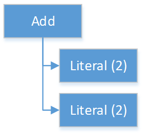
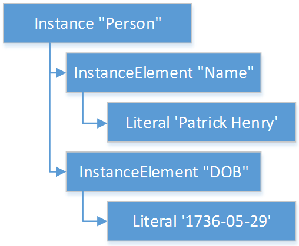
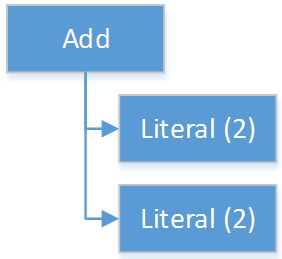

Literal : Expression
¦
1..1 --> valueType
¦
0..1 --> value
Clinical Quality Language Release 1
Publication Build: This will be filled in by the publication tooling
| Clinical Decision Support Work Group | Maturity Level: N | Standards Status: Normative |
This chapter describes the Expression Logical Model (ELM) and how it is used to represent clinical knowledge within a quality artifact.
The ELM defines a mechanism for representing artifact logic independent of syntax and special-purpose constructs introduced at the syntactic level. ELM is equivalent to CQL syntax in terms of expressive power: every possible expression in CQL has an equivalent canonical-form expression in ELM. Higher-level constructs such as timing phrases and implicit conversions are represented in terms of the more primitive operators in ELM. This takes the burden of interpretation of higher-level constructs off of implementers, allowing them to focus on the implementation of a more primitive set of functionality.
Expressions within ELM are represented as Abstract Syntax Trees. ELM defines the base Expression class, and all language elements and operators are then defined as descendants of the base Expression. For example, the Add class descends from BinaryExpression, which introduces two operands, each of type Expression. The Literal class descends from Expression and allows primitive-typed values such as strings and integers to be represented directly. Using these classes, the expression 2 + 2 can be represented as instances of the appropriate classes:

Figure 4‑A - A diagram to explain how ELM represents addition of 2 literal values
By combining instances of the appropriate classes of ELM, the logic for any expression can be represented. Note that the type of the expression can be inferred from the representation, Integer in this example.
The ELM consists of the following components:
Expression – This component defines the core structures for representing expressions, as well as the operations available within those expressions.
Clinical Expression – This component extends the Expression component to introduce expressions specific to the clinical quality domain.
Library – This component defines the structure of a library, the container, and the basic unit of sharing.
Each of these components is defined fully within the ELM UML model. This model is defined formally as an XMI, and the model definition is also presented as an Enterprise Architect Project file (.eap) for viewing.
The documentation provided here serves only as a high-level structural reference for the ELM. The actual content of the specification is defined by the XMI file, and that provides the “source-of-truth” for the ELM specification.
Note that the semantics for the operations described here are defined both in the UML model as comments on the node for each operator, as well as the equivalent CQL operation as defined in Appendix B – CQL Reference.
Support for simple values is provided by the Literal class. This class defines properties to represent the type of the value, as well as the value itself.
Structured values in ELM are values with sets of named elements (tuples), each of which may have a value of any type. Structured values are most commonly used to represent clinical information such as encounters, problems, and procedures.
The Tuple class represents construction of a new structured value, with the values for each element supplied by TupleElement instances.
To access elements of a structured value, use the Property expression. A property expression has a path attribute, an optional source element, and a value element. The source element returns the structured value to be accessed. In some usages, such as within a Filter expression, the source is implicit. If used outside such a usage, a source must be provided.
The path attribute specifies a property path relative to the source structured value. The property expression returns the value of the property specified by the property path. Property paths are allowed to include qualifiers (.) as well as indexers ([x]) to indicate that subelements should be traversed. Indexers specified in paths must be literal integer values.
Tuple : Expression
¦
0..* --> element : TupleElementThe Tuple expression allows tuples of any type to be built up as an expression. The tupleType attribute specifies the type of the tuple being built, if any, and the list of tuple elements specify the values for the elements of the tuple. Note that the value of an element may be any expression, including another Tuple.
The following example illustrates the construction of a tuple using the Tuple class:

Figure 4‑H - A diagram to explain how ELM represents the construction of a Tuple
Instance : Expression
¦
0..* --> element : InstanceElement
¦
1..1 --> classTypeThe Instance expression allows class instances of any type to be built up as an expression. The classType attribute specifies the type of the class instance being built, and the list of instance elements specify the values for the elements of the class instance. Note that the value of an element may be any expression, including another Instance.
The following example illustrates the construction of a structured value using the Instance class:

Figure 4‑I - A diagram to explain how ELM represents the construction of a structured value using the Instance class
Property : Expression
¦
0..1 --> source : Expression
¦
1..1 --> path
¦
0..1 --> scopeThe Property operator returns the value of the property on source specified by the path attribute.
If the result of evaluating source is null, the result is null.
The path attribute may include qualifiers (.) and indexers ([x]). Indexers must be literal integer values.
If the path attribute contains qualifiers or indexers, each qualifier or indexer is traversed to obtain the actual value. If the object of the property access at any point in traversing the path is null, the result is null.
If a scope is specified, the name is used to resolve the scope in which the path will be resolved. Scopes can be named by operators such as Filter and ForEach.
Property expressions can also be used to access the individual points and closed indicators for interval types using the property names low, high, lowClosed, and highClosed.
The following represents clinical information in ELM.
Code : Expression
¦
1..1 --> system : CodeSystemRef
¦
1..1 --> code
¦
0..1 --> displayThe Code type represents a literal code selector.
CodeDef : Element
¦
0..1 --> codeSystem : CodeSystemRef (1)
¦
1..1 --> name
¦
1..1 --> id
¦
0..1 --> display
¦
0..1 --> accessLevelThe code system that contains the code being referenced.
The CodeDef type defines a code identifier that can then be used to reference single codes anywhere within an expression.
CodeRef : Expression
¦
0..1 --> name
¦
0..1 --> libraryNameThe CodeRef expression allows a previously defined code to be referenced within an expression.
CodeSystemDef : Element
¦
1..1 --> name
¦
1..1 --> id
¦
0..1 --> version
¦
0..1 --> accessLevelThe CodeSystemDef type defines a code system identifier that can then be used to identify code systems involved in value set definitions.
CodeSystemRef : Expression
¦
0..1 --> name
¦
0..1 --> libraryNameThe CodeSystemRef expression allows a previously defined named code system to be referenced within an expression. Conceptually, referencing a code system returns the set of codes in the code system. Note that this operation should almost never be performed in practice. Code system references are allowed in order to allow for testing of code membership in a particular code system.
Concept : Expression
¦
1..* --> code : Code
¦
0..1 --> displayThe Concept type represents a literal concept selector.
ConceptDef : Element
¦
1..* --> code : CodeRef (1)
¦
1..1 --> name
¦
0..1 --> display
¦
0..1 --> accessLevelA code that makes up the concept. All codes within a given concept must be synonyms.
The ConceptDef type defines a concept identifier that can then be used to reference single concepts anywhere within an expression.
ConceptRef : Expression
¦
0..1 --> name
¦
0..1 --> libraryNameThe ConceptRef expression allows a previously defined concept to be referenced within an expression.
Quantity : Expression
¦
0..1 --> value
¦
0..1 --> unitThe Quantity type defines a clinical quantity. For example, the quantity 10 days or 30 mmHg. The value is a decimal, while the unit is expected to be a valid UCUM unit or calendar duration keyword, singular or plural.
Ratio : Expression
¦
1..1 --> numerator : Quantity
¦
1..1 --> denominator : QuantityThe Ratio type defines a ratio between two quantities. For example, the titre 1:128, or the concentration ratio 5 mg/10 mL. The numerator and denominator are both quantities.
ValueSetDef : Element
¦
0..* --> codeSystem : CodeSystemRef (1)
¦
0..1 --> name
¦
1..1 --> id
¦
0..1 --> version
¦
0..1 --> accessLevelThe code system that should be used to construct the expansion set. Note that the recommended approach to statically binding to an expansion set is to use a value set definition that specifies the version of each code system used. The codeSystem elements are provided only to ensure static binding can be achieved when the value set definition does not specify code system versions as part of the definition header.
The ValueSetDef type defines a value set identifier that can be referenced by name anywhere within an expression.
The id specifies the globally unique identifier for the value set. This may be an HL7 OID, a FHIR URL, or a CTS2 value set URL.
If version is specified, it will be used to resolve the version of the value set definition to be used. Otherwise, the most current published version of the value set is assumed.
If codeSystems are specified, they will be used to resolve the code systems used within the value set definition to construct the expansion set. Note that the recommended approach to statically binding to an expansion set is to use a value set definition that specifies the version of each code system used. The codeSystemVersions attribute is provided only to ensure static binding can be achieved when the value set definition does not specify code system versions as part of the definition header.
ValueSetRef : Expression
¦
0..1 --> name
¦
0..1 --> libraryName
|
0..1 --> preserveThe ValueSetRef expression allows a previously defined named value set to be referenced within an expression. Conceptually, referencing a value set returns the expansion set for the value set as a list of codes.
The preserve attribute is trial-use in CQL 1.5.2 and was introduced to allow engines to determine whether or not to expand a ValueSetRef (the 1.4 behavior), ensuring that 1.5 engines can run 1.4 ELM.
ELM provides the following elements for type specifiers.
TypeSpecifier : ElementTypeSpecifier is the abstract base type for all type specifiers.
NamedTypeSpecifier : TypeSpecifier
¦
1..1 --> nameNamedTypeSpecifier defines a type identified by a name, such as Integer, String, Patient, or Encounter.
IntervalTypeSpecifier : TypeSpecifier
¦
1..1 --> pointType : TypeSpecifierIntervalTypeSpecifier defines an interval type by specifying the point type. Any type can serve as the point type for an interval, so long as it supports comparison operators, minimum and maximum value determination, as well as predecessor and successor functions.
ListTypeSpecifier : TypeSpecifier
¦
1..1 --> elementType : TypeSpecifierListTypeSpecifier defines a list type by specifying the type of elements the list may contain.
ELM defines the notion of a library as the basic container for logic constructs. Libraries consist of sets of declarations including data model references, library references, valueset definitions, parameters, functions, and named expressions. The Library class defines this unit and defines properties for each of these types of declarations.
Once defined, libraries can then be referenced by other libraries with the IncludeDef class, which defines properties for the name and version of the library being referenced, as well as a local name that is used to access components of the library.
Library : Element
¦
1..1 --> identifier : VersionedIdentifier (1)
¦
1..1 --> schemaIdentifier : VersionedIdentifier (2)
¦
0..1 --> usings (3)
¦ ¦
¦ 1..* --> def : UsingDef (4)
¦
0..1 --> includes (5)
¦ ¦
¦ 1..* --> def : IncludeDef (6)
¦
0..1 --> parameters (7)
¦ ¦
¦ 0..* --> def : ParameterDef
¦
0..1 --> codeSystems (8)
¦ ¦
¦ 0..* --> def : CodeSystemDef
¦
0..1 --> valueSets (9)
¦ ¦
¦ 0..* --> def : ValueSetDef
¦
0..1 --> codes (10)
¦ ¦
¦ 0..* --> def : CodeDef
¦
0..1 --> concepts (11)
¦ ¦
¦ 0..* --> def : ConceptDef
¦
0..1 --> contexts (12)
¦ ¦
¦ 0..* --> def : ContextDef
¦
0..1 --> statements (13)
¦
0..* --> def : ExpressionDefThe identifier element defines a unique identifier for this library, and optionally, a system (or namespace) and version.
This is the identifier of the XML schema (and its version) which governs the structure of this Library.
Set of data models referenced in the Expression objects in this knowledge artifact.
A reference to a data model that is used in the artifact, e.g., the Virtual Medical Record.
Set of libraries referenced by this artifact. Components of referenced libraries may be used within this artifact.
A reference to a library whose components can be used within the artifact.
The parameters defined within this library.
The code systems defined within this library.
The value sets defined within this library.
The codes defined within this library.
The concepts defined within this library.
The contexts used within this library.
The statements section contains the expression and function definitions for the library.
A Library is an instance of a CQL-ELM library.
IncludeDef : Element
¦
1..1 --> localIdentifier
¦
0..1 --> mediaType
¦
1..1 --> path
¦
0..1 --> versionIncludes a library for use within the artifact.
VersionedIdentifier
¦
0..1 --> id
¦
0..1 --> system
¦
0..1 --> versionVersionedIdentifier is composed of three parts: (1) an optional system, or namespace, which provides a globally unique, stable scope for the identifier, (2) an identifier which identifies the set of all versions of a given resource, and (3) the actual version of the instance of interest in this set. The VersionedIdentifier therefore points to an individual 'versioned' instance of a resource such as the third version of a library.
ELM does not reference any specific data model, and so can be used to represent logic expressed against any data model. These data models are specified using the UsingDef class. This class provides attributes for specifying the name and version of the data model. An ELM library can reference any number of models.
The name of the model is an implementation-specific identifier that provides the environment with a mechanism for finding the model description. The details of how that model description is provided are part of the physical representation.
In addition to external data, ELM provides a mechanism for defining parameters to an artifact. A library can define any number of parameters, each of which has a name, and a defined type, as well as an optional default value.
Parameter values, if any, are expected to be provided as part of the evaluation request, and can be accessed with a ParameterRef expression in any expression throughout the library.
ParameterDef : Element
¦
0..1 --> default : Expression
¦
0..1 --> parameterTypeSpecifier : TypeSpecifier
¦
0..1 --> name
¦
0..1 --> parameterType
¦
0..1 --> accessLevelThe ParameterDef type defines a parameter that can be referenced by name anywhere within an expression.
Parameters are defined at the artifact level, and may be provided as part of the payload for an evaluation request.
If no parameter value is provided, the default element is used to provide the value for the parameter.
If no parameter or default is provided, the parameter is defined to be null.
Note that the expression specified in the default element must be able to be evaluated at compile-time (i.e. without reference to any run-time capabilities such as data, terminology, and library references, both local and included).
The ELM Expression component defines a mechanism for representing the structure of logic.
Every expression in ELM is represented as a descendant of the abstract base element Expression. In addition, several abstract descendants are introduced to support the representation of unary, binary, ternary, and n-ary operators. Note that an expression need not descend from one of these descendants, it may descend from Expression directly.
Expression : ElementThe Expression type defines the abstract base type for all expressions used in the ELM expression language.
OperatorExpression : Expression
¦
0..* --> signature : TypeSpecifier (1)Specifies the declared signature of the operator or function being called. If no signature is specified, the run-time types of the operands should be used to resolve any overload.
The Operator type defines the abstract base type for all built-in operators used in the ELM expression language. This explicitly excludes FunctionRef, which is the concrete type for all function invocations.
UnaryExpression : OperatorExpression
¦
1..1 --> operand : ExpressionThe UnaryExpression type defines the abstract base type for expressions that take a single argument.
BinaryExpression : OperatorExpression
¦
2..2 --> operand : ExpressionThe BinaryExpression type defines the abstract base type for expressions that take two arguments.
TernaryExpression : OperatorExpression
¦
3..3 --> operand : ExpressionThe TernaryExpression type defines the abstract base type for expressions that take three arguments.
NaryExpression : OperatorExpression
¦
0..* --> operand : ExpressionThe NaryExpression type defines an abstract base class for an expression that takes any number of arguments, including zero.
AggregateExpression : Expression
¦
0..* --> signature : TypeSpecifier (1)
¦
1..1 --> source : Expression
¦
0..1 --> pathSpecifies the declared signature of the operator or function being called. If no signature is specified, the run-time types of the operands should be used to resolve any overload.
Aggregate expressions perform operations on lists of data, either directly on a list of scalars, or indirectly on a list of objects, with a reference to a property present on each object in the list.
Aggregate expressions deal with missing information by excluding missing values from consideration before performing the aggregated operation. For example, in a Sum over Dose, any instance of Medication with no value for Dose would be ignored.
An aggregate operation performed over an empty list is defined to return null, except as noted in the documentation for each operator (Count, AllTrue, and AnyTrue are the exceptions).
ELM provides a mechanism for reusing expressions by declaring a named expression. This construct is similar to a function call with no parameters in a traditional imperative language, with the exception that since ELM is a pure-functional system, the result of the evaluation could be cached by an implementation to avoid performing the same computation multiple times.
In addition, ELM provides a more traditional function call with named parameters that can then be accessed by the expression in the function body, and passed as part of the call from the invoking environment.
The ExpressionDef class is used to define a named expression that can then be referenced by other expressions. The FunctionDef class is used to define a function and its parameters.
Note that circular expression references are not allowed, but that named expressions can be defined in any order, so long as the actual references do not result in a cycle.
The ExpressionDef class introduces the notion of context which specifies the name of a context defined by the model, such as Patient, Practitioner, or Unfiltered. This context defines how the contained expression is evaluated, either with respect to a single subject, defined by the evaluation environment, or with respect to the entire system. For more information about patient context, please refer to the External Data section.
ExpressionDef : Element
¦
0..1 --> expression : Expression
¦
0..1 --> name
¦
0..1 --> context
¦
0..1 --> accessLevelThe ExpressionDef type defines an expression and an associated name that can be referenced by any expression in the artifact. The name must be unique within the artifact.
The context attribute specifies the context of the execution and is used by the environment to determine whether or not to filter the data returned from retrieves based on the current context.
ExpressionRef : Expression
¦
0..1 --> name
¦
0..1 --> libraryNameThe ExpressionRef type defines an expression that references a previously defined NamedExpression. The result of evaluating an ExpressionReference is the result of evaluating the referenced NamedExpression.
FunctionDef : ExpressionDef
¦
0..* --> operand : OperandDef
¦
0..1 --> external
¦
0..1 --> fluentThe FunctionDef type defines a named function that can be invoked by any expression in the artifact. Function names must be unique within the artifact. Functions may take any number of operands.
FunctionRef : ExpressionRef
¦
0..* --> signature : TypeSpecifier (1)
¦
0..* --> operand : ExpressionSpecifies the declared signature of the function being called. If no signature is specified, the run-time types of the operands should be used to resolve any overload.
The FunctionRef type defines an expression that invokes a previously defined function. The result of evaluating each operand is passed to the function.
ELM provides a mechanism for expressing the structure of a query.
For more information on query semantics, refer to the Queries section of the Author’s Guide, as well as the Multi-Source Queries and Non-Retrieve Queries sections of the Developer’s Guide.
Query : Expression
¦
1..* --> source : AliasedQuerySource
¦
0..* --> let : LetClause
¦
0..* --> relationship : RelationshipClause
¦
0..1 --> where : Expression
¦
0..1 --> return : ReturnClause
¦
0..1 --> aggregate : AggregateClause
¦
0..1 --> sort : SortClauseThe Query operator represents a clause-based query. The result of the query is determined by the type of sources included, as well as the clauses used in the query.
AliasedQuerySource : Element
¦
1..1 --> expression : Expression
¦
1..1 --> aliasThe AliasedQuerySource element defines a single source for inclusion in a query scope. The type of the source is determined by the expression element, and the source can be accessed within the query scope by the given alias.
AliasRef : Expression
¦
0..1 --> nameThe AliasRef expression allows for the reference of a specific source within the scope of a query.
ByColumn : SortByItem
¦
0..1 --> pathThe ByColumn element specifies that the sort should be performed using the given column and direction. This approach is used to specify the sort order for a query when the result is a list of tuples.
ByDirection : SortByItemThe ByDirection element specifies that the sort should be performed using the given direction. This approach is used when the result of the query is a list of non-tuple elements and only the sort direction needs to be specified.
ByExpression : SortByItem
¦
1..1 --> expression : ExpressionThe ByExpression element specifies that the sort should be performed using the given expression and direction. This approach is used to specify the sort order as a calculated expression.
IdentifierRef : Expression
¦
1..1 --> name
¦
0..1 --> libraryNameThe IdentifierRef type defines an expression that references an identifier that is either unresolved, or has been resolved to an attribute in an unambiguous iteration scope such as a sort. Implementations should attempt to resolve the identifier, only throwing an error at compile-time (or run-time for an interpretive system) if the identifier reference cannot be resolved.
LetClause : Element
¦
1..1 --> expression : Expression
¦
1..1 --> identifierThe LetClause element allows any number of expression definitions to be introduced within a query scope. Defined expressions can be referenced by name within the query scope.
QueryLetRef : Expression
¦
0..1 --> nameThe QueryLetRef expression allows for the reference of a specific let definition within the scope of a query.
RelationshipClause : AliasedQuerySource
¦
1..1 --> suchThat : ExpressionThe RelationshipClause element allows related sources to be used to restrict the elements included from another source in a query scope. Note that the elements referenced by the relationship clause can only be accessed within the suchThat condition, and that elements of the related source are not included in the query scope.
ReturnClause : Element
¦
1..1 --> expression : Expression
¦
0..1 --> distinctThe ReturnClause element defines the shape of the result set of the query.
AggregateClause : Element
¦
1..1 --> expression : Expression
¦
0..1 --> starting : Expression
¦
1..1 --> identifier
¦
0..1 --> distinctThe AggregateClause element defines the result of the query in terms of an aggregation expression performed for each item in the query.
SortClause : Element
¦
1..* --> by : SortByItemThe SortClause element defines the sort order for the query.
All access to external data within ELM is represented by Retrieve expressions.
The Retrieve class defines the data type of the request, which determines the type of elements to be returned. The result will always be a list of values of the type specified in the request.
The type of the elements to be returned is specified with the dataType attribute of the Retrieve, and must refer to the name of a type within a known data model specified in the dataModels element of the library definition.
In addition, the Retrieve introduces the ability to specify optional criteria for the request. The available criteria are intentionally restricted to the set of codes involved, and the date range involved. If these criteria are omitted, the request is interpreted to mean all data of that type.
Note that because every expression is being evaluated within a context (such as Patient, Practitioner, or Unfiltered) as defined by the containing ExpressionDef, the data returned by a retrieve depends on the context. For example, for the Patient context, the data is returned for a single patient only, as defined by the evaluation environment. Whereas for the Unfiltered context, the data is returned for the entire source.
Retrieve : Expression
¦
0..1 --> id : Expression
¦
0..1 --> codes : Expression
¦
0..1 --> dateRange : Expression
¦
0..1 --> context : Expression
¦
0..* --> include : IncludeElement
¦
1..1 --> dataType
¦
0..1 --> templateId
¦
0..1 --> idProperty
¦
0..1 --> idSearch
¦
0..1 --> contextProperty
¦
0..1 --> contextSearch
¦
0..1 --> codeProperty
¦
0..1 --> codeSearch
¦
0..1 --> codeComparator
¦
0..1 --> valueSetProperty
¦
0..1 --> dateProperty
¦
0..1 --> dateLowProperty
¦
0..1 --> dateHighProperty
¦
0..1 --> dateSearchThe retrieve expression defines clinical data that will be used by the artifact. This expression allows clinically relevant filtering criteria to be provided in a well-defined and computable way. This operation defines the integration boundary for artifacts. The result of a retrieve is defined to return the same data for subsequent invocations within the same evaluation request. This means in particular that patient data updates made during the evaluation request are not visible to the artifact. In effect, the patient data is a snapshot of the data as of the start of the evaluation. This ensures strict deterministic and functional behavior of the artifact, and allows the implementation engine freedom to cache intermediate results in order to improve performance.
The id element optionally specifies an expression that results in a value that can be used to filter the retrieve to a specific id.
The codes element optionally specifies an expression that results in a List<Code> to match against. Only those clinical statements that match at least one of the specified codes will be returned.
The dateRange element optionally specifies an expression that results in an Interval<DateTime> to match against. Only those clinical statements whose date falls within the specified date range will be returned.
If specified, the context element references an expression that, when evaluated, provides the context for the retrieve. The expression evaluates to the instance id that will be used as the context for the retrieve.
For data models that support templates (also called profiles), The templateId attribute specifies an optional template to be used. If specified, the retrieve is defined to return only objects that conform to the template.
The idProperty attribute specifies which property of the model contains the Id for the clinical statement.
This property may be specified as a path, including qualifiers and constant indexers. The <simplePath> production rule in the CQL grammar provides the formal semantics for this path.
The idSearch attribute specifies the name of the search path to use for searching for the values in the id element.
The contextProperty attribute optionally specifies which property of the model contains the context value.
Note that implementers could also specify this information elsewhere as part of an implementation catalog, rather than on each Retrieve expression, but allowing it to be specified in the retrieve expression gives the most flexibility. Note also that even in the case of an implementation catalog, implementations would still need to respect contextProperty values in the ELM due to the possibility of the retrieve specifying alternate context paths. From the persepctive of ELM, the specification ensures that ELM can be processed without reference to the model information.
This property may be specified as a path, including qualifiers and constant indexers. The <simplePath> production rule in the CQL grammar provides the formal semantics for this path.
The contextSearch attribute specifies the name of the search path to use for searching for the context values.
The codeProperty attribute optionally specifies which property of the model contains the Code or Codes for the clinical statement.
Note that implementers could also specify this information elsewhere as part of an implementation catalog, rather than on each Retrieve expression, but allowing it to be specified in the retrieve expression gives the most flexibility. Note also that even in the case of an implementation catalog, implementations would still need to respect codeProperty values in the ELM due to the possibility of the retrieve specifying alternate code filters. From the perspective of ELM, the specification ensures that ELM can be processed without reference to the model information.
This property may be specified as a path, including qualifiers and constant indexers. The <simplePath> production rule in the CQL grammar provides the formal semantics for this path.
The codeSearch attribute specifies the name of the search path to use for searching for the values in the code element.
The codeComparator attribute specifies how elements of the code property should be matched to the terminology. One of 'in', '=', or '~'. Note that 'in' will resolve to the appropriate terminology matching operator, resulting in equivalence semantics for value set and code system membership testing.
The valueSetProperty attribute optionally specifies which property of the model contains a value set identifier that can be used as an alternative mechanism for matching the value set of the retrieve, in the case when no code is specified in the source data.
This attribute is intended to address the case where systems representing negation rationale for an activity not performed do so by indicating a valueset identifier rather than a code. For example, when indicating that a medication was not administered, the value set identifier for the expected medication is used, rather than indicating a specific medication that was not administered. In this case, the valueSetProperty attribute allows the retrieve to specify where to look for the value set identifier without needing to change the conceptual data model or the CQL logic describing the negated activity.
Note that implementers could also specify this information elsewhere as part of an implementation catalog, rather than on each Retrieve expression, but allowing it to be specified in the retrieve expression gives the most flexibility. From the perspective of ELM, the specification ensures that ELM can be processed without reference to the model information.
This property may be specified as a path, including qualifiers and constant indexers. The <simplePath> production rule in the CQL grammar provides the formal semantics for this path.
The dateProperty attribute optionally specifies which property of the model contains the clinically relevant date for the clinical statement.
This property is expected to reference a property that is either a Date or DateTime, or an interval of Date or DateTime. In either case, the result set will only include instances where the value of the dateProperty is during the date range. For Date or DateTime values, this means the date is both the same or after the beginning of the range, and the same or before the end of the range. For Date- or DateTime-based interval values, this means that the entire interval is included in the date range.
Instances with no value for the dateProperty will not be included in the result set if a date range is specified.
Note that if the dateProperty is specified, the dateLowProperty and dateHighProperty attributes must not be present. And conversely, if the dateLowProperty and dateHighProperty attributes are specified, the dateProperty must not be present. If specified, the dateLowProperty and dateHighProperty values will be used to construct an interval with inclusive boundaries for the date range.
This property may be specified as a path, including qualifiers and constant indexers. The <simplePath> production rule in the CQL grammar provides the formal semantics for this path.
The dateLowProperty attribute optionally specifies which property of the model contains the low component of the clinically relevant date for the clinical statement.
Note that if the dateProperty is specified, the dateLowProperty and dateHighProperty attributes must not be present. And conversely, if the dateLowProperty and dateHighProperty attributes are specified, the dateProperty must not be present.
This property may be specified as a path, including qualifiers and constant indexers. The <simplePath> production rule in the CQL grammar provides the formal semantics for this path.
The dateHighProperty attribute optionally specifies which property of the model contains the high component of the clinically relevant date for the clinical statement.
Note that if the dateProperty is specified, the dateLowProperty and dateHighProperty attributes must not be present. And conversely, if the dateLowProperty and dateHighProperty attributes are specified, the dateProperty must not be present.
This property may be specified as a path, including qualifiers and constant indexers. The <simplePath> production rule in the CQL grammar provides the formal semantics for this path.
The IncludeElement type specifies include information for an include within a retrieve.
IncludeElement : Element
¦
0..1 --> relatedDataType
¦
0..1 --> relatedProperty
¦
0..1 --> relatedSearch
¦
0..1 --> isReverseThe relatedDataType attribute specifies the type of the related data being requested.
The relatedProperty attribute specifies which property of the relatedDataType contains the relatedId for the clinical statement.
This property may be specified as a path, including qualifiers and constant indexers. The <simplePath> production rule in the CQL grammar provides the formal semantics for this path.
ELM defines a standard set of comparison operators for use with simple values. Each comparison operator takes two arguments of the same type, and returns a boolean indicating the result of the comparison. Note that for comparison operators, if either or both operands evaluate to null, the result of the comparison is null, not false.
For more information on the semantics of the various comparison operators, see the Comparison Operators section of the CQL Reference.
Equal : BinaryExpressionThe Equal operator returns true if the arguments are equal; false if the arguments are known unequal, and null otherwise. Equality semantics are defined to be value-based.
For simple types, this means that equality returns true if and only if the result of each argument evaluates to the same value.
For string values, equality is strictly lexical based on the Unicode values for the individual characters in the strings.
For decimal values, trailing zeroes are ignored.
For quantities, this means that the dimensions of each quantity must be the same, but not necessarily the unit. For example, units of 'cm' and 'm' are comparable, but units of 'cm2' and 'cm' are not. Attempting to operate on quantities with invalid units will result in null. When a quantity has no units specified, it is treated as a quantity with the default unit ('1').
For time-valued quantities, UCUM definite-time duration quantities above days (and weeks) are not comparable to calendar duration quantities above days (and weeks). Definite-time duration unit conversions shall be performed as specified in ISO-8601, while calendar-time duration unit conversions shall be performed according to the calendar duration semantics. In particular, unit conversion between variable length calendar durations (i.e. years and months) and definite-time durations (i.e. days or below) results in null.
For ratios, this means that the numerator and denominator must be the same, using quantity equality semantics.
For tuple types, this means that equality returns true if and only if the tuples are of the same type, and the values for all elements that have values, by name, are equal.
For list types, this means that equality returns true if and only if the lists contain elements of the same type, have the same number of elements, and for each element in the lists, in order, the elements are equal using equality semantics, with the exception that null elements are considered equal.
For interval types, equality returns true if and only if the intervals are over the same point type, and they have the same value for the starting and ending points of the interval as determined by the Start and End operators.
For Date, DateTime, and Time values, the comparison is performed by considering each precision in order, beginning with years (or hours for time values). If the values are the same, comparison proceeds to the next precision; if the values are different, the comparison stops and the result is false. If one input has a value for the precision and the other does not, the comparison stops and the result is null; if neither input has a value for the precision or the last precision has been reached, the comparison stops and the result is true. For the purposes of comparison, seconds and milliseconds are combined as a single precision using a decimal, with decimal equality semantics.
If either argument is null, the result is null.
The following example illustrates a simple Equal comparison:

Figure 4‑B - A diagram to explain how ELM represents an equal comparison
Equivalent : BinaryExpressionThe Equivalent operator returns true if the arguments are the same value, or if they are both null; and false otherwise.
With the exception of null behavior and the semantics for specific types defined below, equivalence is the same as equality.
For string values, equivalence returns true if the strings are the same value while ignoring case and locale, and normalizing whitespace. Normalizing whitespace means that all whitespace characters are treated as equivalent, with whitespace characters as defined in the whitespace lexical category.
For decimals, equivalent means the values are the same with the comparison done on values rounded to the precision of the least precise operand; trailing zeroes after the decimal are ignored in determining precision for equivalent comparison.
For quantities, equivalent means the values are the same quantity when considering unit conversion (e.g. 100 'cm' ~ 1 'm') and using decimal equivalent semantics for the value. Note that implementations are not required to support unit conversion and so are allowed to return false for equivalence of quantities with different units.
For time-valued quantities, UCUM definite-time duration quantities above days (and weeks) are considered equivalent to their calendar duration counterparts. Definite-time duration unit conversions shall be performed as specified in ISO-8601, while calendar-time duration unit conversions shall be performed according to the calendar duration semantics. In particular, unit conversion between variable length calendar durations (i.e. years and months) and definite-time durations (i.e. days or below) uses the approximations of 365 days in a year, and 30 days in a month.
For ratios, equivalent means that the numerator and denominator represent the same ratio (e.g. 1:100 ~ 10:1000).
For tuple types, this means that two tuple values are equivalent if and only if the tuples are of the same type, and the values for all elements by name are equivalent.
For list types, this means that two lists are equivalent if and only if the lists contain elements of the same type, have the same number of elements, and for each element in the lists, in order, the elements are equivalent.
For interval types, this means that two intervals are equivalent if and only if the intervals are over the same point type, and the starting and ending points of the intervals as determined by the Start and End operators are equivalent.
For Date, DateTime, and Time values, the comparison is performed in the same way as it is for equality, except that if one input has a value for a given precision and the other does not, the comparison stops and the result is false, rather than null. As with equality, the second and millisecond precisions are combined and combined as a single precision using a decimal, with decimal equivalence semantics.
For Code values, equivalence is defined based on the code and system elements only. The display and version elements are ignored for the purposes of determining Code equivalence.
For Concept values, equivalence is defined as a non-empty intersection of the codes in each Concept.
Note that this operator will always return true or false, even if either or both of its arguments are null or contain null components.
Greater : BinaryExpressionThe Greater operator returns true if the first argument is greater than the second argument.
For comparisons involving quantities, the dimensions of each quantity must be the same, but not necessarily the unit. For example, units of 'cm' and 'm' are comparable, but units of 'cm2' and 'cm' are not. Attempting to operate on quantities with invalid units will result in a null. When a quantity has no units specified, it is treated as a quantity with the default unit ('1').
For time-valued quantities, the UCUM definite-quantity durations above days (and weeks) are not comparable to calendar durations. Definite-time duration unit conversions shall be performed as specified in ISO-8601, while calendar-time duration unit conversions shall be performed according to calendar duration semantics. In particular, unit conversion between variable length calendar durations (i.e. years and months) and definite-time durations (i.e. days or below) results in null.
For Date, DateTime, and Time values, the comparison is performed by considering each precision in order, beginning with years (or hours for time values). If the values are the same, comparison proceeds to the next precision; if the first value is greater than the second, the result is true; if the first value is less than the second, the result is false; if one input has a value for the precision and the other does not, the comparison stops and the result is null; if neither input has a value for the precision or the last precision has been reached, the comparison stops and the result is false. For the purposes of comparison, seconds and milliseconds are combined as a single precision using a decimal, with decimal comparison semantics.
If either argument is null, the result is null.
The Greater operator is defined for the Integer, Long, Decimal, String, Date, DateTime, Time, and Quantity types.
Note that relative ratio comparisons are not directly supported due to the variance of uses within healthcare. See the discussion in Ratio Operators for more information.
GreaterOrEqual : BinaryExpressionThe GreaterOrEqual operator returns true if the first argument is greater than or equal to the second argument.
For comparisons involving quantities, the dimensions of each quantity must be the same, but not necessarily the unit. For example, units of 'cm' and 'm' are comparable, but units of 'cm2' and 'cm' are not. Attempting to operate on quantities with invalid units will result in a null. When a quantity has no units specified, it is treated as a quantity with the default unit ('1').
For time-valued quantities, the UCUM definite-quantity durations above days (and weeks) are not comparable to calendar durations. Definite-time duration unit conversions shall be performed as specified in ISO-8601, while calendar-time duration unit conversions shall be performed according to calendar duration semantics. In particular, unit conversion between variable length calendar durations (i.e. years and months) and definite-time durations (i.e. days or below) results in null.
For Date, DateTime, and Time values, the comparison is performed by considering each precision in order, beginning with years (or hours for time values). If the values are the same, comparison proceeds to the next precision; if the first value is greater than the second, the result is true; if the first value is less than the second, the result is false; if one input has a value for the precision and the other does not, the comparison stops and the result is null; if neither input has a value for the precision or the last precision has been reached, the comparison stops and the result is true. For the purposes of comparison, seconds and milliseconds are combined as a single precision using a decimal, with decimal comparison semantics.
If either argument is null, the result is null.
The GreaterOrEqual operator is defined for the Integer, Long, Decimal, String, Date, DateTime, Time, and Quantity types.
Note that relative ratio comparisons are not directly supported due to the variance of uses within healthcare. See the discussion in Ratio Operators for more information.
Less : BinaryExpressionThe Less operator returns true if the first argument is less than the second argument.
For comparisons involving quantities, the dimensions of each quantity must be the same, but not necessarily the unit. For example, units of 'cm' and 'm' are comparable, but units of 'cm2' and 'cm' are not. Attempting to operate on quantities with invalid units will result in a null. When a quantity has no units specified, it is treated as a quantity with the default unit ('1').
For time-valued quantities, the UCUM definite-quantity durations above days (and weeks) are not comparable to calendar durations. Definite-time duration unit conversions shall be performed as specified in ISO-8601, while calendar-time duration unit conversions shall be performed according to calendar duration semantics. In particular, unit conversion between variable length calendar durations (i.e. years and months) and definite-time durations (i.e. days or below) results in null.
For Date, DateTime, and Time values, the comparison is performed by considering each precision in order, beginning with years (or hours for time values). If the values are the same, comparison proceeds to the next precision; if the first value is less than the second, the result is true; if the first value is greater than the second, the result is false; if one input has a value for the precision and the other does not, the comparison stops and the result is null; if neither input has a value for the precision or the last precision has been reached, the comparison stops and the result is false. For the purposes of comparison, seconds and milliseconds are combined as a single precision using a decimal, with decimal comparison semantics.
If either argument is null, the result is null.
The Less operator is defined for the Integer, Long, Decimal, String, Date, DateTime, Time, and Quantity types.
Note that relative ratio comparisons are not directly supported due to the variance of uses within healthcare. See the discussion in Ratio Operators for more information.
LessOrEqual : BinaryExpressionThe LessOrEqual operator returns true if the first argument is less than or equal to the second argument.
For comparisons involving quantities, the dimensions of each quantity must be the same, but not necessarily the unit. For example, units of 'cm' and 'm' are comparable, but units of 'cm2' and 'cm' are not. Attempting to operate on quantities with invalid units will result in a null. When a quantity has no units specified, it is treated as a quantity with the default unit ('1').
For time-valued quantities, the UCUM definite-quantity durations above days (and weeks) are not comparable to calendar durations. Definite-time duration unit conversions shall be performed as specified in ISO-8601, while calendar-time duration unit conversions shall be performed according to calendar duration semantics. In particular, unit conversion between variable length calendar durations (i.e. years and months) and definite-time durations (i.e. days or below) results in null.
For Date, DateTime, and Time values, the comparison is performed by considering each precision in order, beginning with years (or hours for time values). If the values are the same, comparison proceeds to the next precision; if the first value is less than the second, the result is true; if the first value is greater than the second, the result is false; if one input has a value for the precision and the other does not, the comparison stops and the result is null; if neither input has a value for the precision or the last precision has been reached, the comparison stops and the result is true. For the purposes of comparison, seconds and milliseconds are combined as a single precision using a decimal, with decimal comparison semantics.
If either argument is null, the result is null.
The LessOrEqual operator is defined for the Integer, Long, Decimal, String, Date, DateTime, Time, and Quantity types.
Note that relative ratio comparisons are not directly supported due to the variance of uses within healthcare. See the discussion in Ratio Operators for more information.
ELM defines logical operators that can be used to combine the results of logical expressions. And and Or can be used to combine any number of results, and Not can be used to invert the result of any expression.
Note that these operators are defined with 3-valued logic semantics, allowing the operators to deal consistently with missing information.
For more information on the semantics of these operators, refer to the Logical Operators section in the CQL Reference.
And : BinaryExpressionThe And operator returns the logical conjunction of its arguments. Note that this operator is defined using 3-valued logic semantics. This means that if either argument is false, the result is false; if both arguments are true, the result is true; otherwise, the result is null. Note also that ELM does not prescribe short-circuit evaluation.
The following example illustrates a simple And expression:

Figure 4‑C - A diagram to explain how ELM represents a simple And expression
Implies : BinaryExpressionThe Implies operator returns the logical implication of its arguments. Note that this operator is defined using 3-valued logic semantics. This means that if the left operand evaluates to true, this operator returns the boolean evaluation of the right operand. If the left operand evaluates to false, this operator returns true. Otherwise, this operator returns true if the right operand evaluates to true, and null otherwise.
Note that implies may use short-circuit evaluation in the case that the first operand evaluates to false.
Not : UnaryExpressionThe Not operator returns the logical negation of its argument. If the argument is true, the result is false; if the argument is false, the result is true; otherwise, the result is null.
Or : BinaryExpressionThe Or operator returns the logical disjunction of its arguments. Note that this operator is defined using 3-valued logic semantics. This means that if either argument is true, the result is true; if both arguments are false, the result is false; otherwise, the result is null. Note also that ELM does not prescribe short-circuit evaluation.
Xor : BinaryExpressionThe Xor operator returns the exclusive or of its arguments. Note that this operator is defined using 3-valued logic semantics. This means that the result is true if and only if one argument is true and the other is false, and that the result is false if and only if both arguments are true or both arguments are false. If either or both arguments are null, the result is null.
ELM defines several nullological operators that are useful for dealing with potentially missing information. These are Null, IsNull, IsTrue, IsFalse, and Coalesce.
For more information on the semantics of these operators, refer to the Nullological Operators section in the CQL Reference.
Null : Expression
¦
0..1 --> valueTypeThe Null operator returns a null, or missing information marker. To avoid the need to cast this result, the operator is allowed to return a typed null.
Coalesce : NaryExpressionThe Coalesce operator returns the first non-null result in a list of arguments. If all arguments evaluate to null, the result is null. The static type of the first argument determines the type of the result, and all subsequent arguments must be of that same type.
IsFalse : UnaryExpressionThe IsFalse operator determines whether or not its argument evaluates to false. If the argument evaluates to false, the result is true; if the argument evaluates to true or null, the result is false.
ELM defines several conditional expressions that can be used to return different values based on a condition, or set of conditions. These are the If (conditional) expression, and the Case expression.
The conditional expression allows a simple condition to be used to decide between one expression or another.
The case expression has two varieties, one that is equivalent to repeated conditionals, and one that allows a specific comparand to be identified and compared with each item to determine a result.
Case : Expression
¦
0..1 --> comparand : Expression
¦
1..* --> caseItem : CaseItem
¦
1..1 --> else : ExpressionThe Case operator allows for multiple conditional expressions to be chained together in a single expression, rather than having to nest multiple If operators. In addition, the comparand operand provides a variant on the case that allows a single value to be compared in each conditional.
If a comparand is not provided, the type of each when element of the caseItems within the Case is expected to be boolean. If a comparand is provided, the type of each when element of the caseItems within the Case is expected to be of the same type as the comparand. An else element must always be provided.
The static type of the then argument within the first caseItem determines the type of the result, and the then argument of each subsequent caseItem and the else argument must be of that same type.
The following example illustrates a more complex multi-conditional Case expression:
Figure 4‑E - A diagram to explain how ELM represents a complex multi-conditional Case expression
And finally, an equivalent comparand-based Case expression:

Figure 4‑F - A diagram to explain how ELM represents a comparand-base Case expression
If : Expression
¦
1..1 --> condition : Expression
¦
1..1 --> then : Expression
¦
1..1 --> else : ExpressionThe If operator evaluates a condition, and returns the then argument if the condition evaluates to true; if the condition evaluates to false or null, the result of the else argument is returned. The static type of the then argument determines the result type of the conditional, and the else argument must be of that same type.
The following examples illustrates a simple If expression (i.e. if / then / else):

Figure 4‑D - A diagram to explain how ELM represents a simple If expression
ELM provides a complete set of arithmetic operators to allow for manipulation of integer and real values within artifacts. In general, these operators have the expected semantics for arithmetic operators.
Note that if an operand evaluates to null, the result of the operation is defined to be null. This provides consistent semantics when dealing with missing information.
In general, operations that cause arithmetic overflow or underflow, or otherwise cannot be performed (such as division by 0) will result in null, rather than a run-time error.
For more information on the semantics of these operators, refer to the Arithmetic Operators section in the CQL Reference.
Abs : UnaryExpressionThe Abs operator returns the absolute value of its argument.
When taking the absolute value of a quantity, the unit is unchanged.
If the argument is null, the result is null.
If the result of taking the absolute value of the input cannot be represented (e.g. Abs(minimum Integer)), the result is null.
The Abs operator is defined for the Integer, Long, Decimal, and Quantity types.
Add : BinaryExpressionThe Add operator performs numeric addition of its arguments.
When adding quantities, the dimensions of each quantity must be the same, but not necessarily the unit. For example, units of 'cm' and 'm' can be added, but units of 'cm2' and 'cm' cannot. The unit of the result will be the most granular unit of either input. Attempting to operate on quantities with invalid units will result in a run-time error.
The Add operator is defined for the Integer, Long Decimal, and Quantity types. In addition, a time-valued Quantity can be added to a Date, DateTime or Time using this operator.
For Date, DateTime, and Time values, the operator returns the value of the first argument, incremented by the time-valued quantity, respecting variable length periods for calendar years and months.
For Date values, the quantity unit must be one of years, months, weeks, or days.
For DateTime values, the quantity unit must be one of years, months, weeks, days, hours, minutes, seconds, or milliseconds.
For Time values, the quantity unit must be one of hours, minutes, seconds, or milliseconds.
Note that as with any date and time operations, temporal units may be specified with either singular, plural, or UCUM units. However, to avoid the potential confusion of calendar-based date and time arithmetic with definite-duration date and time arithmetic, it is an error to attempt to add a definite-duration time-valued unit above days (and weeks), a calendar duration must be used.
For precisions above seconds, any decimal portion of the time-valued quantity is ignored, since date/time arithmetic above seconds is performed with calendar duration semantics.
For partial date/time values where the time-valued quantity is more precise than the partial date/time, the operation is performed by converting the time-based quantity to the highest specified granularity in the first argument (truncating any resulting decimal portion) and then adding it to the first argument.
If either argument is null, the result is null.
If the result of the addition cannot be represented (i.e. arithmetic overflow), the result is null.
The following example illustrates a simple Add expression:

Figure 4‑G - A diagram to explain how ELM represents a simple Add expression
Ceiling : UnaryExpressionThe Ceiling operator returns the first integer greater than or equal to the argument.
If the argument is null, the result is null.
Divide : BinaryExpressionThe Divide operator performs numeric division of its arguments. Note that the result type of Divide is Decimal, even if its arguments are of type Integer or Long. For integer division, use the truncated divide operator.
For division operations involving quantities, the resulting quantity will have the appropriate unit.
If either argument is null, the result is null.
If the result of the division cannot be represented, or the right argument is 0, the result is null.
The Divide operator is defined for the Decimal and Quantity types.
Exp : UnaryExpressionThe Exp operator returns e raised to the given power.
If the argument is null, the result is null.
If the result of the operation cannot be represented, the result is null.
Floor : UnaryExpressionThe Floor operator returns the first integer less than or equal to the argument.
If the argument is null, the result is null.
HighBoundary : BinaryExpressionThe HighBoundary operator returns the greatest possible value of the input to the specified precision.
If no precision is specified, the greatest precision of the type of the input value is used (i.e. at least 8 for Decimal, 4 for Date, at least 17 for DateTime, and at least 9 for Time).
If the precision is greater than the maximum possible precision of the implementation, the result is null.
The operator can be used with Decimal, Date, DateTime, and Time values.
HighBoundary(1.587, 8) // 1.58799999
HighBoundary(@2014, 6) // @2014-12
HighBoundary(@2014-01-01T08, 17) // @2014-01-01T08:59:59.999
HighBoundary(@T10:30, 9) // @T10:30:59.999If the input value is null, the result is null.
Log : BinaryExpressionThe Log operator computes the logarithm of its first argument, using the second argument as the base.
If either argument is null, the result is null.
If the result of the operation cannot be represented, the result is null.
LowBoundary : BinaryExpressionThe LowBoundary operator returns the least possible value of the input to the specified precision.
If no precision is specified, the greatest precision of the type of the input value is used (i.e. at least 8 for Decimal, 4 for Date, at least 17 for DateTime, and at least 9 for Time).
If the precision is greater than the maximum possible precision of the implementation, the result is null.
The operator can be used with Decimal, Date, DateTime, and Time values.
LowBoundary(1.587, 8) // 1.58700000
LowBoundary(@2014, 6) // @2014-01
LowBoundary(@2014-01-01T08, 17) // @2014-01-01T08:00:00.000
LowBoundary(@T10:30, 9) // @T10:30:00.000If the input value is null, the result is null.
Ln : UnaryExpressionThe Ln operator computes the natural logarithm of its argument.
If the argument is null, the result is null.
If the result of the operation cannot be represented, the result is null.
MaxValue : Expression
¦
1..1 --> valueTypeThe MaxValue operator returns the maximum representable value for the given type.
The MaxValue operator is defined for the Integer, Long, Decimal, Quantity, Date, DateTime, and Time types.
For Integer, MaxValue returns the maximum signed 32-bit integer, 2^31 - 1.
For Long, MaxValue returns the maximum signed 64-bit integer, 2^63 - 1.
For Decimal, MaxValue returns the maximum representable Decimal value, (10^28 - 1) / 10^8 (99999999999999999999.99999999).
For Quantity, MaxValue returns the maximum representable quantity, i.e. the maximum representable decimal value with a default unit (1).
For Date, MaxValue returns the maximum representable Date value, Date(9999, 12, 31).
For DateTime, MaxValue returns the maximum representable DateTime value, DateTime(9999, 12, 31, 23, 59, 59, 999).
Note that implementations may choose to represent the maximum DateTime value using a constant offset such as UTC.
For Time, MaxValue returns the maximum representable Time value, Time(23, 59, 59, 999).
For any other type, attempting to invoke MaxValue results in an error.
MinValue : Expression
¦
1..1 --> valueTypeThe MinValue operator returns the minimum representable value for the given type.
The MinValue operator is defined for the Integer, Long, Decimal, Quantity, Date, DateTime, and Time types.
For Integer, MinValue returns the minimum signed 32-bit integer, -(2^31).
For Long, MinValue returns the minimum signed 64-bit integer, -(2^63).
For Decimal, MinValue returns the minimum representable Decimal value, (-10^28 + 1) / 10^8 (-99999999999999999999.99999999).
For Quantity, MinValue returns the minimum representable quantity, i.e. the minimum representable decimal value with a default unit (1).
For Date, MinValue returns the minimum representable Date value, Date(1, 1, 1).
For DateTime, MinValue returns the minimum representable DateTime value, DateTime(1, 1, 1, 0, 0, 0, 0).
Note that implementations may choose to represent the minimum DateTime value using a constant offset such as UTC.
For Time, MinValue returns the minimum representable Time value, Time(0, 0, 0, 0).
For any other type, attempting to invoke MinValue results in an error.
Modulo : BinaryExpressionThe Modulo operator computes the remainder of the division of its arguments.
If either argument is null, the result is null.
If the result of the modulo cannot be represented, or the right argument is 0, the result is null.
The Modulo operator is defined for the Integer, Long, Decimal, and Quantity types.
For Modulo operations involving quantities, the resulting quantity will have the appropriate unit.
Multiply : BinaryExpressionThe Multiply operator performs numeric multiplication of its arguments.
For multiplication operations involving quantities, the resulting quantity will have the appropriate unit.
If either argument is null, the result is null.
If the result of the operation cannot be represented, the result is null.
The Multiply operator is defined for the Integer, Long, Decimal and Quantity types.
Negate : UnaryExpressionThe Negate operator returns the negative of its argument.
When negating quantities, the unit is unchanged.
If the argument is null, the result is null.
If the result of negating the argument cannot be represented (e.g. -(minimum Integer)), the result is null.
The Negate operator is defined for the Integer, Long, Decimal, and Quantity types.
Power : BinaryExpressionThe Power operator raises the first argument to the power given by the second argument.
If either argument is null, the result is null.
If the result of the operation cannot be represented, the result is null.
Precision : UnaryExpressionThe Precision operator returns the number of digits of precision in the input value.
The operator can be used with Decimal, Date, DateTime, and Time values.
For Decimal values, the operator returns the number of digits of precision after the decimal place in the input value.
Precision(1.58700) // 5For Date and DateTime values, the operator returns the number of digits of precision in the input value.
Precision(@2014) // 4
Precision(@2014-01-05T10:30:00.000) // 17
Precision(@T10:30) // 4
Precision(@T10:30:00.000) // 9If the argument is null, the result is null.
Predecessor : UnaryExpressionThe Predecessor operator returns the predecessor of the argument. For example, the predecessor of 2 is 1. If the argument is already the minimum value for the type, a run-time error is thrown.
The Predecessor operator is defined for the Integer, Long, Decimal, Quantity, Date, DateTime, and Time types.
For Integer, Predecessor is equivalent to subtracting 1.
For Long, Predecessor is equivalent to subtracting 1L.
For Decimal, Predecessor is equivalent to subtracting the minimum precision value for the Decimal type, or 10^-08.
For Date, DateTime, and Time values, Predecessor is equivalent to subtracting a time-unit quantity for the lowest specified precision of the value. For example, if the DateTime is fully specified, Predecessor is equivalent to subtracting 1 millisecond; if the DateTime is specified to the second, Predecessor is equivalent to subtracting one second, etc.
For Quantity values, the Predecessor is equivalent to subtracting 1 if the quantity is an integer, and the minimum precision value for Decimal if the quantity is a decimal. The units are unchanged.
If the argument is null, the result is null.
If the result of the operation cannot be represented, the result is null.
Note that implementations that support more precise values than the minimum required precision and scale for Decimal, DateTime, and Time values, the predecessor will reflect the minimum representable step size for the implementation.
Round : OperatorExpression
¦
1..1 --> operand : Expression
¦
0..1 --> precision : ExpressionThe Round operator returns the nearest integer to its argument. The semantics of round are defined as a traditional round, meaning that a decimal value of 0.5 or higher will round to 1.
If the argument is null, the result is null.
Precision determines the decimal place at which the rounding will occur. If precision is not specified or null, 0 is assumed.
Subtract : BinaryExpressionThe Subtract operator performs numeric subtraction of its arguments.
When subtracting quantities, the dimensions of each quantity must be the same, but not necessarily the unit. For example, units of 'cm' and 'm' can be subtracted, but units of 'cm2' and 'cm' cannot. The unit of the result will be the most granular unit of either input. Attempting to operate on quantities with invalid units will result in a run-time error.
The Subtract operator is defined for the Integer, Long, Decimal, and Quantity types. In addition, a time-valued Quantity can be subtracted from a Date, DateTime, or Time using this operator.
For Date, DateTime, Time values, the operator returns the value of the first argument, decremented by the time-valued quantity, respecting variable length periods for calendar years and months.
For Date values, the quantity unit must be one of years, months, weeks, or days.
For DateTime values, the quantity unit must be one of years, months, weeks, days, hours, minutes, seconds, or milliseconds.
For Time values, the quantity unit must be one of hours, minutes, seconds, or milliseconds.
Note that as with any Date, Time, or DateTime operations, temporal units may be specified with either singular, plural, or UCUM units. However, to avoid the potential confusion of calendar-based date and time arithmetic with definite-duration date and time arithmetic, it is an error to attempt to subtract a definite-duration time-valued unit above days (and weeks), a calendar duration must be used.
For precisions above seconds, any decimal portion of the time-valued quantity is ignored, since date/time arithmetic above seconds is performed with calendar duration semantics.
For partial date/time values where the time-valued quantity is more precise than the partial date/time, the operation is performed by converting the time-based quantity to the highest specified granularity in the first argument (truncating any resulting decimal portion) and then subtracting it from the first argument.
If either argument is null, the result is null.
If the result of the operation cannot be represented, the result is null.
Successor : UnaryExpressionThe Successor operator returns the successor of the argument. For example, the successor of 1 is 2. If the argument is already the maximum value for the type, a run-time error is thrown.
The Successor operator is defined for the Integer, Long, Decimal, Quantity, Date, DateTime, and Time types.
For Integer, Successor is equivalent to adding 1.
For Long, Successor is equivalent to adding 1L.
For Decimal, Successor is equivalent to adding the minimum precision value for the Decimal type, or 10^-08.
For Date, DateTime, and Time values, Successor is equivalent to adding a time-unit quantity for the lowest specified precision of the value. For example, if the DateTime is fully specified, Successor is equivalent to adding 1 millisecond; if the DateTime is specified to the second, Successor is equivalent to adding one second, etc.
For Quantity values, Successor is equivalent to adding 1 if the quantity is an integer, and the minimum precision value for the Decimal type if the quantity is a decimal. The units are unchanged.
If the argument is null, the result is null.
If the result of the operation cannot be represented, the result is null.
Note that implementations that support more precise values than the minimum required precision and scale for Decimal, DateTime, and Time values, the successor will reflect the minimum representable step size for the implementation.
Truncate : UnaryExpressionThe Truncate operator returns the integer component of its argument.
If the argument is null, the result is null.
TruncatedDivide : BinaryExpressionThe TruncatedDivide operator performs integer division of its arguments.
If either argument is null, the result is null.
If the result of the operation cannot be represented, or the right argument is 0, the result is null.
The TruncatedDivide operator is defined for the Integer, Long, Decimal, and Quantity types.
For TruncatedDivide operations involving quantities, the resulting quantity will have the appropriate unit.
ELM defines a set of string operators to allow for manipulation of string values within artifact definitions.
Indexes within strings are defined to be 0-based.
Note that except as noted within the documentation for each operator, if any argument evaluates to null, the result of the operation is also defined to be null.
For more information on the semantics of these operators, refer to the String Operators section in the CQL Reference.
Combine : OperatorExpression
¦
1..1 --> source : Expression
¦
0..1 --> separator : ExpressionThe Combine operator combines a list of strings, optionally separating each string with the given separator.
If either argument is null, or any element in the source list of strings is null, the result is null.
Concatenate : NaryExpressionThe Concatenate operator performs string concatenation of its arguments.
If any argument is null, the result is null.
EndsWith : BinaryExpressionThe EndsWith operator returns true if the given string ends with the given suffix.
If the suffix is the empty string, the result is true.
If either argument is null, the result is null.
Refer to the Equal section in the Comparison Operators.
Refer to the Equivalent section in the Comparison Operators.
Indexer : BinaryExpressionThe Indexer operator returns the indexth element in a string or list.
Indexes in strings and lists are defined to be 0-based.
If the index is less than 0 or greater than the length of the string or list being indexed, the result is null.
If either argument is null, the result is null.
LastPositionOf : OperatorExpression
¦
1..1 --> pattern : Expression
¦
1..1 --> string : ExpressionThe LastPositionOf operator returns the 0-based index of the beginning of the last appearance of the given pattern in the given string.
If the pattern is not found, the result is -1.
If either argument is null, the result is null.
Length : UnaryExpressionThe Length operator returns the length of its argument.
For strings, the length is the number of characters in the string.
For lists, the length is the number of elements in the list.
If the argument is null, the result is 0.
Lower : UnaryExpressionThe Lower operator returns the given string with all characters converted to their lowercase equivalents.
Note that the definition of lowercase for a given character is a locale-dependent determination, and is not specified by CQL. Implementations are expected to provide appropriate and consistent handling of locale for their environment.
If the argument is null, the result is null.
Matches : BinaryExpressionThe Matches operator returns true if the given string matches the given regular expression pattern. Regular expressions should function consistently, regardless of any culture- and locale-specific settings in the environment, should be case-sensitive, use single line mode, and allow Unicode characters.
If either argument is null, the result is null.
Platforms will typically use native regular expression implementations. These are typically fairly similar, but there will always be small differences. As such, CQL does not prescribe a particular dialect, but recommends the use of the PCRE dialect.
Refer to the Not Equal section in the Comparison Operators.
PositionOf : OperatorExpression
¦
1..1 --> pattern : Expression
¦
1..1 --> string : ExpressionThe PositionOf operator returns the 0-based index of the beginning given pattern in the given string.
If the pattern is not found, the result is -1.
If either argument is null, the result is null.
ReplaceMatches : TernaryExpressionThe ReplaceMatches operator matches the given string using the regular expression pattern, replacing each match with the given substitution. The substitution string may refer to identified match groups in the regular expression. Regular expressions should function consistently, regardless of any culture- and locale-specific settings in the environment, should be case-sensitive, use single line mode and allow Unicode characters.
If any argument is null, the result is null.
Platforms will typically use native regular expression implementations. These are typically fairly similar, but there will always be small differences. As such, CQL does not prescribe a particular dialect, but recommends the use of the PCRE dialect.
Split : OperatorExpression
¦
1..1 --> stringToSplit : Expression
¦
0..1 --> separator : ExpressionThe Split operator splits a string into a list of strings using a separator.
If the stringToSplit argument is null, the result is null.
If the stringToSplit argument does not contain any appearances of the separator, the result is a list of strings containing one element that is the value of the stringToSplit argument.
SplitOnMatches : OperatorExpression
¦
1..1 --> stringToSplit : Expression
¦
1..1 --> separatorPattern : ExpressionThe SplitOnMatches operator splits a string into a list of strings using matches of a regex pattern.
The separatorPattern argument is a regex pattern, following the same semantics as the Matches operator.
If the stringToSplit argument is null, the result is null.
If the stringToSplit argument does not contain any appearances of the separator pattern, the result is a list of strings containing one element that is the input value of the stringToSplit argument.
StartsWith : BinaryExpressionThe StartsWith operator returns true if the given string starts with the given prefix.
If the prefix is the empty string, the result is true.
If either argument is null, the result is null.
Substring : OperatorExpression
¦
1..1 --> stringToSub : Expression
¦
1..1 --> startIndex : Expression
¦
0..1 --> length : ExpressionThe Substring operator returns the string within stringToSub, starting at the 0-based index startIndex, and consisting of length characters.
If length is omitted, the substring returned starts at startIndex and continues to the end of stringToSub.
If stringToSub or startIndex is null, or startIndex is out of range, the result is null.
Upper : UnaryExpressionThe Upper operator returns the given string with all characters converted to their upper case equivalents.
Note that the definition of uppercase for a given character is a locale-dependent determination, and is not specified by CQL. Implementations are expected to provide appropriate and consistent handling of locale for their environment.
If the argument is null, the result is null.
ELM defines several operators for representing the manipulation of date and time values. These operators are defined using a common precision type that allows the various precisions (e.g. day, month, week, hour, minute, second) of time to be manipulated.
Except as noted within the documentation for each operator, if any argument evaluates to null, the result of the operation is also defined to be null.
For more information on the semantics of these operators, refer to the Date, DateTime, and Time Operators section in the CQL Reference.
Refer to the Add section in the Arithmetic Operators.
Refer to the After section in the Interval Operators.
Refer to the Before section in the Interval Operators.
Refer to the Equal section in the Comparison Operators.
Refer to the Equivalent section in the Comparison Operators.
Date : OperatorExpression
¦
1..1 --> year : Expression
¦
0..1 --> month : Expression
¦
0..1 --> day : ExpressionThe Date operator constructs a date value from the given components.
At least one component must be specified, and no component may be specified at a precision below an unspecified precision. For example, month may be null, but if it is, day must be null as well.
DateFrom : UnaryExpressionThe DateFrom operator returns the date (with no time components specified) of the argument.
If the argument is null, the result is null.
DateTime : OperatorExpression
¦
1..1 --> year : Expression
¦
0..1 --> month : Expression
¦
0..1 --> day : Expression
¦
0..1 --> hour : Expression
¦
0..1 --> minute : Expression
¦
0..1 --> second : Expression
¦
0..1 --> millisecond : Expression
¦
0..1 --> timezoneOffset : ExpressionThe DateTime operator constructs a DateTime value from the given components.
At least one component other than timezoneOffset must be specified, and no component may be specified at a precision below an unspecified precision. For example, hour may be null, but if it is, minute, second, and millisecond must all be null as well.
If all the arguments are null, the result is null, as opposed to a DateTime with no components specified.
Although the milliseconds are specified with a separate component, seconds and milliseconds are combined and represented as a Decimal for the purposes of comparison.
If timezoneOffset is not specified, it is defaulted to the timezone offset of the evaluation request.
DateTimeComponentFrom : UnaryExpression
¦
0..1 --> precisionThe DateTimeComponentFrom operator returns the specified component of the argument.
If the argument is null, the result is null.
The precision must be one of Year, Month, Day, Hour, Minute, Second, or Millisecond. Note specifically that since there is variability how weeks are counted, Week precision is not supported, and will result in an error.
DifferenceBetween : BinaryExpression
¦
0..1 --> precisionThe DifferenceBetween operator returns the number of boundaries crossed for the specified precision between the first and second arguments. If the first argument is after the second argument, the result is negative. Because this operation is only counting boundaries crossed, the result is always an integer.
For Date values, precision must be one of Year, Month, Week, or Day.
For Time values, precision must be one of Hour, Minute, Second, or Millisecond.
For calculations involving weeks, Sunday is considered to be the first day of the week for the purposes of determining boundaries.
When calculating the difference between DateTime values with different timezone offsets, implementations should normalize to the timezone offset of the evaluation request timestamp, but only when the comparison precision is hours, minutes, seconds, or milliseconds.
If either argument is null, the result is null.
Note that this operator can be implemented using Uncertainty as described in the CQL specification, Chapter 5, Precision-Based Timing.
DurationBetween : BinaryExpression
¦
0..1 --> precisionThe DurationBetween operator returns the number of whole calendar periods for the specified precision between the first and second arguments. If the first argument is after the second argument, the result is negative. The result of this operation is always an integer; any fractional periods are dropped.
For Date values, precision must be one of Year, Month, Week, or Day.
For Time values, precision must be one of Hour, Minute, Second, or Millisecond.
For calculations involving weeks, the duration of a week is equivalent to 7 days.
When calculating duration between DateTime values with different timezone offsets, implementations should normalize to the timezone offset of the evaluation request timestamp, but only when the comparison precision is hours, minutes, seconds, or milliseconds.
If either argument is null, the result is null.
Note that this operator can be implemented using Uncertainty as described in the CQL specification, Chapter 5, Precision-Based Timing.
Refer to the Not Equal section in the Comparison Operators.
Now : OperatorExpressionThe Now operator returns the date and time of the start timestamp associated with the evaluation request. Now is defined in this way for two reasons: 1) The operation will always return the same value within any given evaluation, ensuring that the result of an expression containing Now will always return the same result.
2) The operation will return the timestamp associated with the evaluation request, allowing the evaluation to be performed with the same timezone offset information as the data delivered with the evaluation request.
SameAs : BinaryExpression
¦
0..1 --> precisionThe SameAs operator is defined for Date, DateTime, and Time values, as well as intervals.
For the Interval overloads, the SameAs operator returns true if the intervals start and end at the same value, using the semantics described in the Start and End operator to determine interval boundaries.
The SameAs operator compares two Date, DateTime, or Time values to the specified precision for equality. Individual component values are compared starting from the year component down to the specified precision. If all values are specified and have the same value for each component, then the result is true. If a compared component is specified in both dates, but the values are not the same, then the result is false. Otherwise the result is null, as there is not enough information to make a determination.
If no precision is specified, the comparison is performed beginning with years (or hours for time values) and proceeding to the finest precision specified in either input.
For Date values, precision must be one of year, month, or day.
For DateTime values, precision must be one of year, month, day, hour, minute, second, or millisecond.
For Time values, precision must be one of hour, minute, second, or millisecond.
Note specifically that due to variability in the way week numbers are determined, comparisons involving weeks are not supported.
When comparing DateTime values with different timezone offsets, implementations should normalize to the timezone offset of the evaluation request timestamp, but only when the comparison precision is hours, minutes, seconds, or milliseconds.
If either argument is null, the result is null.
SameOrBefore : BinaryExpression
¦
0..1 --> precisionThe SameOrBefore operator is defined for Date, DateTime, and Time values, as well as intervals.
For the Interval overload, the SameOrBefore operator returns true if the first interval ends on or before the second one starts. In other words, if the ending point of the first interval is less than or equal to the starting point of the second interval, using the semantics described in the Start and End operators to determine interval boundaries.
The SameOrBefore operator compares two Date, DateTime, or Time values to the specified precision to determine whether the first argument is the same or before the second argument. The comparison is performed by considering each precision in order, beginning with years (or hours for time values). If the values are the same, comparison proceeds to the next precision; if the first value is less than the second, the result is true; if the first value is greater than the second, the result is false; if either input has no value for the precision, the comparison stops and the result is null; if the specified precision has been reached, the comparison stops and the result is true.
If no precision is specified, the comparison is performed beginning with years (or hours for time values) and proceeding to the finest precision specified in either input.
For Date values, precision must be one of year, month, or day.
For DateTime values, precision must be one of year, month, day, hour, minute, second, or millisecond.
For Time values, precision must be one of hour, minute, second, or millisecond.
Note specifically that due to variability in the way week numbers are determined, comparisons involving weeks are not supported.
When comparing DateTime values with different timezone offsets, implementations should normalize to the timezone offset of the evaluation request timestamp, but only when the comparison precision is hours, minutes, seconds, or milliseconds.
If either argument is null, the result is null.
SameOrAfter : BinaryExpression
¦
0..1 --> precisionThe SameOrAfter operator is defined for Date, DateTime, and Time values, as well as intervals.
For the Interval overload, the SameOrAfter operator returns true if the first interval starts on or after the second one ends. In other words, if the starting point of the first interval is greater than or equal to the ending point of the second interval, using the semantics described in the Start and End operators to determine interval boundaries.
For the Date, DateTime, and Time overloads, this operator compares two Date, DateTime, or Time values to the specified precision to determine whether the first argument is the same or after the second argument. The comparison is performed by considering each precision in order, beginning with years (or hours for time values). If the values are the same, comparison proceeds to the next precision; if the first value is greater than the second, the result is true; if the first value is less than the second, the result is false; if either input has no value for the precision, the comparison stops and the result is null; if the specified precision has been reached, the comparison stops and the result is true.
If no precision is specified, the comparison is performed beginning with years (or hours for time values) and proceeding to the finest precision specified in either input.
For Date values, precision must be one of year, month, or day.
For DateTime values, precision must be one of year, month, day, hour, minute, second, or millisecond.
For Time values, precision must be one of hour, minute, second, or millisecond.
Note specifically that due to variability in the way week numbers are determined, comparisons involving weeks are not supported.
When comparing DateTime values with different timezone offsets, implementations should normalize to the timezone offset of the evaluation request timestamp, but only when the comparison precision is hours, minutes, seconds, or milliseconds.
If either argument is null, the result is null.
Refer to the Subtract section in the Arithmetic Operators.
Time : OperatorExpression
¦
1..1 --> hour : Expression
¦
0..1 --> minute : Expression
¦
0..1 --> second : Expression
¦
0..1 --> millisecond : ExpressionThe Time operator constructs a time value from the given components.
At least one component other than timezoneOffset must be specified, and no component may be specified at a precision below an unspecified precision. For example, minute may be null, but if it is, second, and millisecond must all be null as well.
Although the milliseconds are specified with a separate component, seconds and milliseconds are combined and represented as a Decimal for the purposes of comparison.
TimeFrom : UnaryExpressionThe TimeFrom operator returns the Time of the argument.
When extracting the Time from a DateTime value, implementations should normalize to the timezone offset of the evaluation request timestamp.
If the argument is null, the result is null.
TimezoneOffsetFrom : UnaryExpressionThe TimezoneOffsetFrom operator returns the timezone offset of the argument.
If the argument is null, the result is null.
ELM defines a complete set of operators for use in defining and manipulating interval values.
Constructing an interval is performed with the Interval expression, which allows the beginning and ending of the interval to be specified, as well as whether the interval beginning and ending is exclusive (open), or inclusive (closed).
ELM defines support for basic operations on intervals including determining length, accessing interval properties, and determining interval boundaries.
ELM also supports complete operations involving comparisons of intervals, including equality, membership testing, and inclusion testing.
In addition, the language supports operators for combining and manipulating intervals.
Note that ELM does not include a definition for During because it is synonymous with IncludedIn.
For more information on the semantics of these operators, refer to the Interval Operators section in the CQL Reference.
Interval : Expression
¦
0..1 --> low : Expression
¦
0..1 --> lowClosedExpression : Expression
¦
0..1 --> high : Expression
¦
0..1 --> highClosedExpression : Expression
¦
0..1 --> lowClosed
¦
0..1 --> highClosedThe Interval selector defines an interval value. An interval must be defined using a point type that supports comparison, as well as Successor and Predecessor operations, and Minimum and Maximum Value operations.
The low and high bounds of the interval may each be defined as open or closed. Following standard terminology usage in interval mathematics, an open interval is defined to exclude the specified point, whereas a closed interval includes the point. The default is closed, indicating an inclusive interval.
The low and high elements are both optional. If the low element is not specified, the low bound of the resulting interval is null. If the high element is not specified, the high bound of the resulting interval is null.
The static type of the low bound determines the type of the interval, and the high bound must be of the same type.
If the low bound of the interval is null and open, the low bound of the interval is interpreted as unknown and represented as an uncertainty from the minimum value for the point type to the high boundary (inclusive); computations involving the low boundary may result in null.
If the low bound of the interval is null and closed, the interval is interpreted to start at the minimum value of the point type, and computations involving the low boundary will be performed with that value.
If the high bound of the interval is null and open, the high bound of the interval is unknown and represented as an uncertainty from the low boundary (inclusive) to the maximum value for the point type; computations involving the high boundary may result in null.
If the high bound of the interval is null and closed, the interval is interpreted to end at the maximum value of the point type, and computations involving the high boundary will be performed with that interpretation.
After : BinaryExpression
¦
0..1 --> precisionThe After operator is defined for Intervals, as well as Date, DateTime, and Time values.
For the Interval overload, the After operator returns true if the first interval starts after the second one ends. In other words, if the starting point of the first interval is greater than the ending point of the second interval using the semantics described in the Start and End operators to determine interval boundaries.
For the Date, DateTime, and Time overloads, the After operator returns true if the first datetime is after the second datetime at the specified level of precision. The comparison is performed by considering each precision in order, beginning with years (or hours for time values). If the values are the same, comparison proceeds to the next precision; if the first value is greater than the second, the result is true; if the first value is less than the second, the result is false; if either input has no value for the precision, the comparison stops and the result is null; if the specified precision has been reached, the comparison stops and the result is false.
If no precision is specified, the comparison is performed beginning with years (or hours for time values) and proceeding to the finest precision specified in either input.
For Date values, precision must be one of year, month, or day.
For DateTime values, precision must be one of year, month, day, hour, minute, second, or millisecond.
For Time values, precision must be one of hour, minute, second, or millisecond.
Note specifically that due to variability in the way week numbers are determined, comparisons involving weeks are not supported.
When comparing DateTime values with different timezone offsets, implementations should normalize to the timezone offset of the evaluation request timestamp, but only when the comparison precision is hours, minutes, seconds, or milliseconds.
If either argument is null, the result is null.
Before : BinaryExpression
¦
0..1 --> precisionThe Before operator is defined for Intervals, as well as Date, DateTime, and Time values.
For the Interval overload, the Before operator returns true if the first interval ends before the second one starts. In other words, if the ending point of the first interval is less than the starting point of the second interval, using the semantics described in the Start and End operators to determine interval boundaries.
For the Date, DateTime, and Time overloads, the comparison is performed by considering each precision in order, beginning with years (or hours for time values). If the values are the same, comparison proceeds to the next precision; if the first value is less than the second, the result is true; if the first value is greater than the second, the result is false; if either input has no value for the precision, the comparison stops and the result is null; if the specified precision has been reached, the comparison stops and the result is false.
If no precision is specified, the comparison is performed beginning with years (or hours for time values) and proceeding to the finest precision specified in either input.
For Date values, precision must be one of year, month, or day.
For DateTime values, precision must be one of year, month, day, hour, minute, second, or millisecond.
For Time values, precision must be one of hour, minute, second, or millisecond.
Note specifically that due to variability in the way week numbers are determined, comparisons involving weeks are not supported.
When comparing DateTime values with different timezone offsets, implementations should normalize to the timezone offset of the evaluation request timestamp, but only when the comparison precision is hours, minutes, seconds, or milliseconds.
If either argument is null, the result is null.
Collapse : BinaryExpressionThe Collapse operator returns the unique set of intervals that completely covers the ranges present in the given list of intervals. In other words, adjacent intervals within a sorted list are merged if they either overlap or meet.
The operation is performed by combining successive intervals in the input that either overlap or meet, using the semantics defined for the Overlaps and Meets operators. Note that because those operators are themselves defined in terms of interval successor and predecessor operators, sets of Date-, DateTime-, and Time-based intervals that are only defined to a particular precision will calculate meets and overlaps at that precision. For example, a list of DateTime-based intervals where the boundaries are all specified to the hour will collapse at the hour precision, unless the collapse precision is overridden with the per argument.
The per argument determines the precision at which the collapse is computed and must be a quantity-valued expression compatible with the interval point type. For numeric intervals, this means a quantity with the default unit '1' (not to be confused with the quantity value, which may be any valid positive decimal). For Date-, DateTime-, and Time-valued intervals, this means a quantity with a temporal unit (e.g., 'year', 'month', etc).
Conceptually, the per argument to the collapse operator partitions the value-space for the operation into units of size 'per', and the intervals will be collapsed aligning with those partitions. Note that the 'per' partitions start from the starting boundary of the first input interval, ordered.
If the per argument is null, a per value will be constructed based on the coarsest precision of the boundaries of the intervals in the input set. For example, a list of DateTime-based intervals where the boundaries are a mixture of hours and minutes will collapse at the hour precision.
If the list of intervals is empty, the result is empty. If the list of intervals contains a single interval, the result is a list with that interval. If the list of intervals contains nulls, they will be excluded from the resulting list.
If the source argument is null, the result is null.
Contains : BinaryExpression
¦
0..1 --> precisionThe Contains operator returns true if the first operand contains the second.
There are two overloads of this operator: 1. List, T : The type of T must be the same as the element type of the list. 2. Interval, T : The type of T must be the same as the point type of the interval.
For the List, T overload, this operator returns true if the given element is in the list, using equality semantics, with the exception that null elements are considered equal. If the first argument is null, the result is false. If the second argument is null, the result is true if the list contains any null elements, and false otherwise.
For the Interval, T overload, this operator returns true if the given point is equal to the starting or ending point of the interval, or greater than the starting point and less than the ending point. For open interval boundaries, exclusive comparison operators are used. For closed interval boundaries, if the interval boundary is null, the result of the boundary comparison is considered true. If precision is specified and the point type is a Date, DateTime, or Time type, comparisons used in the operation are performed at the specified precision. If the first argument is null, the result is false. If the second argument is null, the result is null.
End : UnaryExpressionThe End operator returns the ending point of an interval.
If the high boundary of the interval is open, this operator returns the Predecessor of the high value of the interval. Note that if the high value of the interval is null, the result is null.
If the high boundary of the interval is closed and the high value of the interval is not null, this operator returns the high value of the interval. Otherwise, the result is the maximum value of the point type of the interval.
If the argument is null, the result is null.
Ends : BinaryExpression
¦
0..1 --> precisionThe Ends operator returns true if the first interval ends the second. In other words, if the starting point of the first interval is greater than or equal to the starting point of the second, and the ending point of the first interval is equal to the ending point of the second.
This operator uses the semantics described in the Start and End operators to determine interval boundaries.
If precision is specified and the point type is a Date, DateTime, or Time type, comparisons used in the operation are performed at the specified precision.
If either argument is null, the result is null.
Refer to the Equal section in the Comparison Operators.
Refer to the Equivalent section in the Comparison Operators.
Except : NaryExpressionThe Except operator returns the set difference of the two arguments.
This operator has two overloads: 1. List, List 2. Interval, Interval
For the list overload, this operator returns a list with the elements that appear in the first operand, that do not appear in the second operand, using equality semantics, with the exception that null elements are considered equal for the purposes of determining the result. The operator is defined with set semantics, meaning that each element will appear in the result at most once, and that there is no expectation that the order of the inputs will be preserved in the results.
For the interval overload, this operator returns the portion of the first interval that does not overlap with the second. If the second argument is properly contained within the first and does not start or end it, this operator returns null.
If the first argument is null, the result is null. If the second argument is null, the operation is performed as though the second argument was an empty list.
Expand : BinaryExpressionThe Expand operator returns the set of intervals of size per for all the ranges present in the given list of intervals, or the list of points covering the range of the given interval, if invoked on a single interval.
The per argument determines the size of the resulting intervals and must be a quantity-valued expression compatible with the interval point type. For numeric intervals, this means a quantity with the default unit '1' (not to be confused with the quantity value, which may be any valid positive decimal). For Date-, DateTime-, and Time-valued intervals, this means a quantity with a temporal unit (e.g., 'year', 'month', etc).
Conceptually, the per argument to the expand operator partitions the value-space for the operation into units of size 'per', and the intervals will be expanded aligning with those partitions. Note that the 'per' partitions start from the starting boundary of the first input interval, ordered.
If the per argument is null, a per value will be constructed based on the coarsest precision of the boundaries of the intervals in the input set. For example, a list of DateTime-based intervals where the boundaries are a mixture of hours and minutes will expand at the hour precision.
Note that if the values in the intervals are more precise than the per quantity, the more precise values will be truncated to the precision specified by the per quantity.
If the input argument is an interval, rather than a list of intervals, the result is a list of points, rather than a list of intervals. In this case, the calculation is performed the same way, but the starting point of each resulting interval is returned, rather than the interval.
If the list of intervals is empty, the result is empty. If the list of intervals contains nulls, they will be excluded from the resulting list.
If the source argument is null, the result is null.
In : BinaryExpression
¦
0..1 --> precisionThe In operator tests for membership in an interval or list.
There are two overloads of this operator: 1. T, List : The type of T must be the same as the element type of the list. 2. T, Interval : The type of T must be the same as the point type of the interval.
For the T, List overload, this operator returns true if the given element is in the given list, using equality semantics, with the exception that null elements are considered equal. If the first argument is null, the result is true if the list contains any null elements, and false otherwise. If the second argument is null, the result is false.
For the T, Interval overload, this operator returns true if the given point is equal to the starting or ending point of the interval, or greater than the starting point and less than the ending point. For open interval boundaries, exclusive comparison operators are used. For closed interval boundaries, if the interval boundary is null, the result of the boundary comparison is considered true. If precision is specified and the point type is a Date, DateTime, or Time type, comparisons used in the operation are performed at the specified precision. If the first argument is null, the result is null. If the second argument is null, the result is false.
Includes : BinaryExpression
¦
0..1 --> precisionThe Includes operator returns true if the first operand completely includes the second.
There are two overloads of this operator: 1. List, List : The element type of both lists must be the same. 2. Interval, Interval : The point type of both intervals must be the same.
For the List, List overload, this operator returns true if the first operand includes every element of the second operand, using equality semantics, with the exception that null elements are considered equal.
For the Interval, Interval overload, this operator returns true if starting point of the first interval is less than or equal to the starting point of the second interval, and the ending point of the first interval is greater than or equal to the ending point of the second interval. If precision is specified and the point type is a Date, DateTime, or Time type, comparisons used in the operation are performed at the specified precision.
This operator uses the semantics described in the Start and End operators to determine interval boundaries.
If either argument is null, the result is null.
IncludedIn : BinaryExpression
¦
0..1 --> precisionThe IncludedIn operator returns true if the first operand is completely included in the second.
There are two overloads of this operator: 1. List, List : The element type of both lists must be the same. 2. Interval, Interval : The point type of both intervals must be the same.
For the List, List overload, this operator returns true if every element in the first list is included in the second list, using equality semantics, with the exception that null elements are considered equal.
For the Interval, Interval overload, this operator returns true if the starting point of the first interval is greater than or equal to the starting point of the second interval, and the ending point of the first interval is less than or equal to the ending point of the second interval. If precision is specified and the point type is a Date, DateTime, or Time type, comparisons used in the operation are performed at the specified precision.
This operator uses the semantics described in the Start and End operators to determine interval boundaries.
If either argument is null, the result is null.
Intersect : NaryExpressionThe Intersect operator returns the intersection of its arguments.
This operator has two overloads: List Interval
For the list overload, this operator returns a list with the elements that appear in both lists, using equality semantics, with the exception that null elements are considered equal for the purposes of the intersection. The operator is defined with set semantics, meaning that each element will appear in the result at most once, and that there is no expectation that the order of the inputs will be preserved in the results.
For the interval overload, this operator returns the interval that defines the overlapping portion of both arguments. If the arguments do not overlap, this operator returns null.
If either argument is null, the result is null.
Meets : BinaryExpression
¦
0..1 --> precisionThe Meets operator returns true if the first interval ends immediately before the second interval starts, or if the first interval starts immediately after the second interval ends. In other words, if the ending point of the first interval is equal to the predecessor of the starting point of the second, or if the starting point of the first interval is equal to the successor of the ending point of the second.
This operator uses the semantics described in the Start and End operators to determine interval boundaries.
If precision is specified and the point type is a Date, DateTime, or Time type, comparisons used in the operation are performed at the specified precision.
If either argument is null, the result is null.
MeetsBefore : BinaryExpression
¦
0..1 --> precisionThe MeetsBefore operator returns true if the first interval ends immediately before the second interval starts. In other words, if the ending point of the first interval is equal to the predecessor of the starting point of the second.
This operator uses the semantics described in the Start and End operators to determine interval boundaries.
If precision is specified and the point type is a Date, DateTime, or Time type, comparisons used in the operation are performed at the specified precision.
If either argument is null, the result is null.
MeetsAfter : BinaryExpression
¦
0..1 --> precisionThe MeetsAfter operator returns true if the first interval starts immediately after the second interval ends. In other words, if the starting point of the first interval is equal to the successor of the ending point of the second.
This operator uses the semantics described in the Start and End operators to determine interval boundaries.
If precision is specified and the point type is a Date, DateTime, or Time type, comparisons used in the operation are performed at the specified precision.
If either argument is null, the result is null.
Refer to the Not Equal section in the Comparison Operators.
Overlaps : BinaryExpression
¦
0..1 --> precisionThe Overlaps operator returns true if the first interval overlaps the second. In other words, if the starting or ending point of either interval is in the other, or if the ending point of the first interval is greater than or equal to the starting point of the second interval, and the starting point of the first interval is less than or equal to the ending point of the second interval.
This operator uses the semantics described in the Start and End operators to determine interval boundaries.
If precision is specified and the point type is a Date, DateTime, or Time type, comparisons used in the operation are performed at the specified precision.
If either argument is null, the result is null.
OverlapsBefore : BinaryExpression
¦
0..1 --> precisionThe OverlapsBefore operator returns true if the first interval starts before and overlaps the second. In other words, if the first interval starts before and ends on or after the start of the second interval.
This operator uses the semantics described in the Start and End operators to determine interval boundaries.
If precision is specified and the point type is a Date, DateTime, or Time type, comparisons used in the operation are performed at the specified precision.
If either argument is null, the result is null.
OverlapsAfter : BinaryExpression
¦
0..1 --> precisionThe OverlapsAfter operator returns true if the first interval overlaps and ends after the second. In other words, if the first interval ends after and starts on or before the end of the second interval.
This operator uses the semantics described in the Start and End operators to determine interval boundaries.
If precision is specified and the point type is a Date, DateTime, or Time type, comparisons used in the operation are performed at the specified precision.
If either argument is null, the result is null.
PointFrom : UnaryExpressionThe PointFrom expression extracts the single point from the source interval. The source interval must be a unit interval (meaning an interval with the same starting and ending boundary), otherwise, a run-time error is thrown. If the source interval is null, the result is null.
ProperContains : BinaryExpression
¦
0..1 --> precisionThe ProperContains operator returns true if the first operand properly contains the second.
There are two overloads of this operator: List, T: The type of T must be the same as the element type of the list. Interval, T : The type of T must be the same as the point type of the interval.
For the List, T overload, this operator returns true if the given element is in the list, and it is not the only element in the list, using equality semantics, with the exception that null elements are considered equal. If the first argument is null, the result is false. If the second argument is null, the result is true if the list contains any null elements and at least one other element, and false otherwise.
For the Interval, T overload, this operator returns true if the given point is greater than the starting point of the interval, and less than the ending point of the interval, as determined by the Start and End operators. If precision is specified and the point type is a Date, DateTime, or Time type, comparisons used in the operation are performed at the specified precision. If the first argument is null, the result is false. If the second argument is null, the result is null.
ProperIn : BinaryExpression
¦
0..1 --> precisionThe ProperIn operator tests for proper membership in an interval or list.
There are two overloads of this operator: T, List : The type of T must be the same as the element type of the list. T, Interval : The type of T must be the same as the point type of the interval.
For the T, List overload, this operator returns if the given element is in the given list, and it is not the only element in the list, using equality semantics, with the exception that null elements are considered equal. If the first argument is null, the result is true if the list contains any null elements and at least one other element, and false otherwise. If the second argument is null, the result is false.
For the T, Interval overload, this operator returns true if the given point is greater than the starting point, and less than the ending point of the interval, as determined by the Start and End operators. If precision is specified and the point type is a Date, DateTime, or Time type, comparisons used in the operation are performed at the specified precision. If the first argument is null, the result is null. If the second argument is null the result is false.
ProperIncludes : BinaryExpression
¦
0..1 --> precisionThe ProperIncludes operator returns true if the first operand includes the second, and is strictly larger.
There are two overloads of this operator: List, List : The element type of both lists must be the same. Interval, Interval : The point type of both intervals must be the same.
For the List, List overload, this operator returns true if the first list is strictly larger, and the first list includes every element of the second list, using equality semantics, with the exception that null elements are considered equal.
For the Interval, Interval overload, this operator returns true if the first interval includes the second interval, and the intervals are not equal. If precision is specified and the point type is a Date, DateTime, or Time type, comparisons used in the operation are performed at the specified precision.
This operator uses the semantics described in the Start and End operators to determine interval boundaries.
If either argument is null, the result is null.
ProperIncludedIn : BinaryExpression
¦
0..1 --> precisionThe ProperIncludedIn operator returns true if the first operand is included in the second, and is strictly smaller.
There are two overloads of this operator: List, List : The element type of both lists must be the same. Interval, Interval : The point type of both intervals must be the same.
For the List, List overload, this operator returns true if the first list is strictly smaller, and every element of the first list is included in the second list, using equality semantics, with the exception that null elements are considered equal.
For the Interval, Interval overload, this operator returns true if the first interval is included in the second interval, and the intervals are not equal. If precision is specified and the point type is a Date, DateTime, or Time type, comparisons used in the operation are performed at the specified precision.
This operator uses the semantics described in the Start and End operators to determine interval boundaries.
If either argument is null, the result is null.
Size : UnaryExpressionThe Size operator returns the size of an interval.
The result of this operator is equivalent to invoking: End(i) - Start(i) + point-size, where the point-size for the point type of the interval is determined by: Successor(Minimum_T) - Minimum_T.
Note that this operator is not defined for intervals of type Date, DateTime, and Time.
If the argument is null, the result is null.
Start : UnaryExpressionThe Start operator returns the starting point of an interval.
If the low boundary of the interval is open, this operator returns the Successor of the low value of the interval. Note that if the low value of the interval is null, the result is null.
If the low boundary of the interval is closed and the low value of the interval is not null, this operator returns the low value of the interval. Otherwise, the result is the minimum value of the point type of the interval.
If the argument is null, the result is null.
Starts : BinaryExpression
¦
0..1 --> precisionThe Starts operator returns true if the first interval starts the second. In other words, if the starting point of the first is equal to the starting point of the second interval and the ending point of the first interval is less than or equal to the ending point of the second interval.
This operator uses the semantics described in the Start and End operators to determine interval boundaries.
If precision is specified and the point type is a Date, DateTime, or Time type, comparisons used in the operation are performed at the specified precision.
If either argument is null, the result is null.
Union : NaryExpressionThe Union operator returns the union of its arguments.
This operator has two overloads: List Interval
For the list overload, this operator returns a list with all unique elements from both arguments, using equality semantics, with the exception that null elements are considered equal.
For the interval overload, this operator returns the interval that starts at the earliest starting point in either argument, and ends at the latest starting point in either argument. If the arguments do not overlap or meet, this operator returns null.
If either argument is null, the operation is performed as though the argument was an empty list.
ELM allows for the expression and manipulation of lists of values of any type. The most basic list operation is the List class, which represents a simple list selector.
Basic list operations include testing for membership, indexing, and content. ELM also supports comparison of lists, including equality and inclusion determination (subset/superset). Supported operations on single lists include filtering, sorting, and computation. For multiple lists, ELM supports combining through union and intersection, as well as computing the difference.
The use of the scope attribute allows for more complex expressions such as correlated subqueries.
ELM also supports a flattening operator, Flatten to construct a single list from a list of lists.
For more information on the semantics of these operators, refer to the List Operators section in the CQL Reference.
List : Expression
¦
0..1 --> typeSpecifier : TypeSpecifier
¦
0..* --> element : ExpressionThe List selector returns a value of type List, whose elements are the result of evaluating the arguments to the List selector, in order.
If a typeSpecifier element is provided, the list is of that type. Otherwise, the static type of the first argument determines the type of the resulting list, and each subsequent argument must be of that same type.
If any argument is null, the resulting list will have null for that element.
Refer to the Contains section in the Interval Operators.
Current : Expression
¦
0..1 --> scopeThe Current expression returns the value of the object currently in scope. For example, within a ForEach expression, this returns the current element being considered in the iteration.
It is an error to invoke the Current operator outside the context of a scoped operation.
Distinct : UnaryExpressionThe Distinct operator takes a list of elements and returns a list containing only the unique elements within the input. For example, given the list of integers { 1, 1, 1, 2, 2, 3, 4, 4 }, the result of Distinct would be { 1, 2, 3, 4 }.
The operator uses equality comparison semantics as defined in the Equal operator, with the exception that nulls are considered equal for the purposes of distinct determination. This means that multiple nulls in the input will result in a single null in the output.
If the source argument is null, the result is null.
Refer to the Equal section in the Comparison Operators.
Refer to the Equivalent section in the Comparison Operators.
Refer to the Except section in the Interval Operators.
Exists : UnaryExpressionThe Exists operator returns true if the list contains any non-null elements.
If the argument is null, the result is false.
Filter : Expression
¦
1..1 --> source : Expression
¦
1..1 --> condition : Expression
¦
0..1 --> scopeThe Filter operator returns a list with only those elements in the source list for which the condition element evaluates to true.
If the source argument is null, the result is null.
First : OperatorExpression
¦
1..1 --> source : Expression
¦
0..1 --> orderByThe First operator returns the first element in a list. If the order by attribute is specified, the list is sorted by that ordering prior to returning the first element.
If the argument is null, the result is null.
Flatten : UnaryExpressionThe Flatten operator flattens a list of lists into a single list.
If the argument is null, the result is null.
ForEach : Expression
¦
1..1 --> source : Expression
¦
1..1 --> element : Expression
¦
0..1 --> scopeThe ForEach expression iterates over the list of elements in the source element, and returns a list with the same number of elements, where each element in the new list is the result of evaluating the element expression for each element in the source list.
If the source argument is null, the result is null.
If the element argument evaluates to null for some item in the source list, the resulting list will contain a null for that element.
Refer to the In section in the Interval Operators.
Refer to the Includes section in the Interval Operators.
Refer to the IncludedIn section in the Interval Operators.
IndexOf : OperatorExpression
¦
1..1 --> source : Expression
¦
1..1 --> element : ExpressionThe IndexOf operator returns the 0-based index of the given element in the given source list.
The operator uses equality semantics as defined in the Equal operator to determine the index. The search is linear, and returns the index of the first element for which the equality comparison returns true.
If the list is empty, or no element is found, the result is -1.
If either argument is null, the result is null.
Refer to the Intersect section in the Interval Operators.
Last : OperatorExpression
¦
1..1 --> source : Expression
¦
0..1 --> orderByThe Last operator returns the last element in a list. If the order by attribute is specified, the list is sorted by that ordering prior to returning the last element.
If the argument is null, the result is null.
Refer to the Not Equal section in the Comparison Operators.
Refer to the ProperContains section in the Interval Operators.
Refer to the ProperIn section in the Interval Operators.
Refer to the ProperIncludes section in the Interval Operators.
Refer to the ProperIncludedIn section in the Interval Operators.
Repeat : Expression
¦
1..1 --> source : Expression
¦
1..1 --> element : Expression
¦
0..1 --> scopeThe Repeat expression performs successive ForEach until no new elements are returned.
The operator uses equality comparison semantics as defined in the Equal operator.
If the source argument is null, the result is null.
If the element argument evaluates to null for some item in the source list, the resulting list will contain a null for that element.
SingletonFrom : UnaryExpressionThe SingletonFrom expression extracts a single element from the source list. If the source list is empty, the result is null. If the source list contains one element, that element is returned. If the list contains more than one element, a run-time error is thrown. If the source list is null, the result is null.
Slice : OperatorExpression
¦
1..1 --> source : Expression
¦
1..1 --> startIndex : Expression
¦
1..1 --> endIndex : ExpressionThe Slice operator returns a portion of the elements in a list, beginning at the start index and ending just before the ending index.
If the source list is null, the result is null.
If the startIndex is null, the slice begins at the first element of the list.
If the endIndex is null, the slice continues to the last element of the list.
If the startIndex or endIndex is less than 0, or if the endIndex is less than the startIndex, the result is an empty list.
Sort : Expression
¦
1..1 --> source : Expression
¦
1..* --> by : SortByItemThe Sort operator returns a list with all the elements in source, sorted as described by the by element.
When the sort elements do not provide a unique ordering (i.e. there is a possibility of duplicate sort values in the result), the order of duplicates is unspecified.
If the argument is null, the result is null.
Times : BinaryExpressionThe Times operator performs the cartesian product of two lists of tuples. The return type of a Times operator is a tuple with all the components from the tuple types of both arguments. The result will contain a tuple for each possible combination of tuples from both arguments with the values for each component derived from the pairing of the source tuples.
If either argument is null, the result is null.
Refer to the Union section in the Interval Operators.
For computing aggregate quantities, ELM defines several aggregate operators. These operators perform computations on lists of values, either on the elements of the list directly, or on a specific property of each element in the list.
Unless noted in the documentation for each operator, aggregate operators deal with missing information by excluding elements which have no value before performing the aggregation. In addition, an aggregate operation performed over an empty list is defined to return null, except as noted in the documentation for each operator (e.g. Count).
In general, operations that cause arithmetic overflow or underflow, or otherwise cannot be performed (such as division by 0) will result in null, rather than a run-time error.
For more information on the semantics of these operators, refer to the Aggregate Functions section in the CQL Reference.
AllTrue : AggregateExpressionThe AllTrue operator returns true if all the non-null elements in source are true.
If a path is specified, elements with no value for the property specified by the path are ignored.
If the source contains no non-null elements, true is returned.
If the source is null, the result is true.
AnyTrue : AggregateExpressionThe AnyTrue operator returns true if any non-null element in source is true.
If a path is specified, elements with no value for the property specified by the path are ignored.
If the source contains no non-null elements, false is returned.
If the source is null, the result is false.
Avg : AggregateExpressionThe Avg operator returns the average of the non-null elements in source.
If a path is specified, elements with no value for the property specified by the path are ignored.
If the source contains no non-null elements, null is returned.
If the source is null, the result is null.
Count : AggregateExpressionThe Count operator returns the number of non-null elements in the source.
If a path is specified, the count returns the number of elements that have a value for the property specified by the path.
If the list is empty, the result is 0.
If the list is null, the result is 0.
GeometricMean : AggregateExpressionThe GeometricMean operator returns the geometric mean of the non-null elements in source.
If a path is specified, elements with no value for the property specified by the path are ignored.
If the source contains no non-null elements, null is returned.
If the source is null, the result is null.
Product : AggregateExpressionThe Product operator returns the geometric product of non-null elements in the source.
If a path is specified, elements with no value for the property specified by the path are ignored.
If the source contains no non-null elements, null is returned.
If the list is null, the result is null.
Max : AggregateExpressionThe Max operator returns the maximum element in the source. Comparison semantics are defined by the comparison operators for the type of the values being aggregated.
If a path is specified, elements with no value for the property specified by the path are ignored.
If the source contains no non-null elements, null is returned.
If the source is null, the result is null.
Median : AggregateExpressionThe Median operator returns the median of the elements in source.
If a path is specified, elements with no value for the property specified by the path are ignored.
If the source contains no non-null elements, null is returned.
If the source is null, the result is null.
Min : AggregateExpressionThe Min operator returns the minimum element in the source. Comparison semantics are defined by the comparison operators for the type of the values being aggregated.
If a path is specified, elements with no value for the property specified by the path are ignored.
If the source contains no non-null elements, null is returned.
If the source is null, the result is null.
Mode : AggregateExpressionThe Mode operator returns the statistical mode of the elements in source.
If a path is specified, elements with no value for the property specified by the path are ignored.
If the source contains no non-null elements, null is returned.
If the source is null, the result is null.
PopulationVariance : AggregateExpressionThe PopulationVariance operator returns the statistical population variance of the elements in source.
If a path is specified, elements with no value for the property specified by the path are ignored.
If the source contains no non-null elements, null is returned.
If the source is null, the result is null.
PopulationStdDev : AggregateExpressionThe PopulationStdDev operator returns the statistical standard deviation of the elements in source.
If a path is specified, elements with no value for the property specified by the path are ignored.
If the source contains no non-null elements, null is returned.
If the source is null, the result is null.
Sum : AggregateExpressionThe Sum operator returns the sum of non-null elements in the source.
If a path is specified, elements with no value for the property specified by the path are ignored.
If the source contains no non-null elements, null is returned.
If the list is null, the result is null.
StdDev : AggregateExpressionThe StdDev operator returns the statistical standard deviation of the elements in source.
If a path is specified, elements with no value for the property specified by the path are ignored.
If the source contains no non-null elements, null is returned.
If the list is null, the result is null.
Variance : AggregateExpressionThe Variance operator returns the statistical variance of the elements in source.
If a path is specified, elements with no value for the property specified by the path are ignored.
If the source contains no non-null elements, null is returned.
If the source is null, the result is null.
For more information on the semantics of these operators, refer to the Type Operators section in the CQL Reference.
As : UnaryExpression
¦
0..1 --> asTypeSpecifier : TypeSpecifier
¦
0..1 --> asType
¦
0..1 --> strictThe As operator allows the result of an expression to be cast as a given target type. This allows expressions to be written that are statically typed against the expected run-time type of the argument. If the argument is not of the specified type, and the strict attribute is false (the default), the result is null. If the argument is not of the specified type and the strict attribute is true, an exception is thrown.
CanConvert : UnaryExpression
¦
0..1 --> toTypeSpecifier : TypeSpecifier
¦
0..1 --> toTypeThe CanConvert operator returns true if the given value can be converted to a specific type, and false otherwise.
This operator returns true for conversion:
Between String and each of Boolean, Integer, Long, Decimal, Quantity, Ratio, Date, DateTime, and Time,
as well as:
From Integer to Long, Decimal, or Quantity
From Decimal to Quantity
Between Date and DateTime
From Code to Concept
Between Concept and List<Code>
Conversion between String and Date/DateTime/Time is checked using the ISO-8601 standard format: YYYY-MM-DDThh:mm:ss(+|-)hh:mm.
See Formatting Strings for a description of the formatting strings used in this specification.
CanConvertQuantity : BinaryExpressionThe CanConvertQuantity operator returns true if the Quantity can be converted to an equivalent Quantity with the given Unit. Otherwise, the result is false.
Note that implementations are not required to support quantity conversion, and so may return false, even if the conversion is valid. Implementations that do support unit conversion shall do so according to the conversion specified by UCUM.
If either argument is null, the result is null.
Children : OperatorExpression
¦
1..1 --> source : ExpressionFor structured types, the Children operator returns a list of all the values of the elements of the type. List-valued elements are expanded and added to the result individually, rather than as a single list.
For list types, the result is the same as invoking Children on each element in the list and flattening the resulting lists into a single result.
If the source is null, the result is null.
Convert : UnaryExpression
¦
0..1 --> toTypeSpecifier : TypeSpecifier
¦
0..1 --> toTypeThe Convert operator converts a value to a specific type. The result of the operator is the value of the argument converted to the target type, if possible.
If no valid conversion exists from the actual value to the target type, the result is null.
This operator supports conversion:
Between String and each of Boolean, Integer, Long, Decimal, Quantity, Ratio, Date, DateTime, and Time
as well as:
From Integer to Long, Decimal, or Quantity
From Decimal to Quantity
Between Date and DateTime
From Code to Concept
Between Concept and List<Code>
Conversion between String and Date/DateTime/Time is performed using the ISO-8601 standard format: YYYY-MM-DDThh:mm:ss(+|-)hh:mm.
See Formatting Strings for a description of the formatting strings used in this specification.
ConvertQuantity : BinaryExpressionThe ConvertQuantity operator converts a Quantity to an equivalent Quantity with the given unit. If the unit of the input quantity can be converted to the target unit, the result is an equivalent Quantity with the target unit. Otherwise, the result is null.
Note that implementations are not required to support quantity conversion. Implementations that do support unit conversion shall do so according to the conversion specified by UCUM. Implementations that do not support unit conversion shall throw an error if an unsupported unit conversion is requested with this operation.
If either argument is null, the result is null.
ConvertsToBoolean : UnaryExpressionThe ConvertsToBoolean operator returns true if the value of its argument is or can be converted to a Boolean value.
The operator accepts 'true', 't', 'yes', 'y', and '1' as string representations of true, and 'false', 'f', 'no', 'n', and '0' as string representations of false, ignoring case.
If the input cannot be interpreted as a valid Boolean value, the result is false.
If the input is an Integer or Long, the result is true if the integer is 1 or 0.
If the input is a Decimal, the result is true if the decimal is 1.0 or 0.0.
If the argument is null the result is null.
ConvertsToDate : UnaryExpressionThe ConvertsToDate operator returns true if the value of its argument is or can be converted to a Date value.
For String values, The operator expects the string to be formatted using the ISO-8601 date representation:
YYYY-MM-DD
See Formatting Strings for a description of the formatting strings used in this specification.
In addition, the string must be interpretable as a valid date value.
Note that the operator can take time formatted strings and will ignore the time portions.
If the input string is not formatted correctly, or does not represent a valid date value, the result is false.
As with date literals, date values may be specified to any precision.
If the argument is null, the result is null.
ConvertsToDateTime : UnaryExpressionThe ConvertsToDateTime operator returns true if the value of its argument is or can be converted to a DateTime value.
For String values, the operator expects the string to be formatted using the ISO-8601 datetime representation:
YYYY-MM-DDThh:mm:ss.fff(Z|+|-)hh:mm
See Formatting Strings for a description of the formatting strings used in this specification.
In addition, the string must be interpretable as a valid DateTime value.
If the input string is not formatted correctly, or does not represent a valid DateTime value, the result is false.
As with Date and Time literals, DateTime values may be specified to any precision. If no timezone offset is supplied, the timezone offset of the evaluation request timestamp is assumed.
If the argument is null, the result is null.
ConvertsToDecimal : UnaryExpressionThe ConvertsToDecimal operator returns true if the value of its argument is or can be converted to a Decimal value. The operator accepts strings using the following format:
(+|-)?#0(.0#)?
Meaning an optional polarity indicator, followed by any number of digits (including none), followed by at least one digit, followed optionally by a decimal point, at least one digit, and any number of additional digits (including none).
See Formatting Strings for a description of the formatting strings used in this specification.
Note that for this operator to return true, the input value must be limited in precision and scale to the maximum precision and scale representable for Decimal values within CQL.
If the input string is not formatted correctly, or cannot be interpreted as a valid Decimal value, the result is false.
If the input is a Boolean, the result is true.
If the argument is null, the result is null.
ConvertsToLong : UnaryExpressionThe ConvertsToLong operator returns true if the value of its argument is or can be converted to a Long value. The operator accepts strings using the following format:
(+|-)?#0
Meaning an optional polarity indicator, followed by any number of digits (including none), followed by at least one digit.
See Formatting Strings for a description of the formatting strings used in this specification.
Note that for this operator to return true, the input must be a valid value in the range representable for Long values in CQL.
If the input string is not formatted correctly, or cannot be interpreted as a valid Long value, the result is false.
If the input is a Boolean, the result is true.
If the argument is null, the result is null.
ConvertsToInteger : UnaryExpressionThe ConvertsToInteger operator returns true if the value of its argument is or can be converted to an Integer value. The operator accepts strings using the following format:
(+|-)?#0
Meaning an optional polarity indicator, followed by any number of digits (including none), followed by at least one digit.
See Formatting Strings for a description of the formatting strings used in this specification.
Note that for this operator to return true, the input must be a valid value in the range representable for Integer values in CQL.
If the input string is not formatted correctly, or cannot be interpreted as a valid Integer value, the result is false.
If the input is a Boolean, the result is true
If the argument is null, the result is null.
ConvertsToQuantity : UnaryExpressionThe ConvertsToQuantity operator returns true if the value of its argument is or can be converted to a Quantity value. The operator may be used with Integer, Decimal, Ratio, or String values.
For String values, the operator accepts strings using the following format:
(+|-)?#0(.0#)?('<unit>')?
Meaning an optional polarity indicator, followed by any number of digits (including none) followed by at least one digit, optionally followed by a decimal point, at least one digit, and any number of additional digits, all optionally followed by a unit designator as a string literal specifying a valid UCUM unit of measure or calendar duration keyword, singular or plural. Spaces are allowed between the quantity value and the unit designator.
See Formatting Strings for a description of the formatting strings used in this specification.
Note that the decimal value of the quantity returned by this operator must be a valid value in the range representable for Decimal values in CQL.
If the input string is not formatted correctly, or cannot be interpreted as a valid Quantity value, the result is false.
For Integer, Decimal, and Ratio values, the operator simply returns true.
If the argument is null, the result is null.
ConvertsToRatio : UnaryExpressionThe ConvertsToRatio operator returns true if the value of its argument is or can be converted to a Ratio value. The operator accepts strings using the following format:
<quantity>:<quantity>
Meaning a quantity, followed by a colon (:), followed by another quantity. The operator accepts quantity strings using the same format as the ToQuantity operator.
If the input string is not formatted correctly, or cannot be interpreted as a valid Ratio value, the result is false.
If the argument is null, the result is null.
ConvertsToString : UnaryExpressionThe ConvertsToString operator returns true if the value of its argument is or can be converted to a String value.
The operator returns true if the argument is any of the following types:
Boolean
Integer
Long
Decimal
DateTime
Date
Time
Quantity
Ratio
String
If the argument is null, the result is null.
ConvertsToTime : UnaryExpressionThe ConvertsToTime operator returns true if the value of its argument is or can be converted to a Time value.
For String values, the operator expects the string to be formatted using ISO-8601 time representation:
hh:mm:ss.fff
See Formatting Strings for a description of the formatting strings used in this specification.
In addition, the string must be interpretable as a valid time-of-day value.
If the input string is not formatted correctly, or does not represent a valid time-of-day value, the result is false.
As with time-of-day literals, time-of-day values may be specified to any precision. If no timezone offset is supplied, the timezone offset of the evaluation request timestamp is assumed.
If the argument is null, the result is null.
Descendents : OperatorExpression
¦
1..1 --> source : ExpressionFor structured types, the Descendents operator returns a list of all the values of the elements of the type, recursively. List-valued elements are expanded and added to the result individually, rather than as a single list.
For list types, the result is the same as invoking Descendents on each element in the list and flattening the resulting lists into a single result.
If the source is null, the result is null.
Is : UnaryExpression
¦
0..1 --> isTypeSpecifier : TypeSpecifier
¦
0..1 --> isTypeThe Is operator allows the type of a result to be tested. The language must support the ability to test against any type. If the run-time type of the argument is of the type being tested, the result of the operator is true; otherwise, the result is false.
ToBoolean : UnaryExpressionThe ToBoolean operator converts the value of its argument to a Boolean value.
The operator accepts 'true', 't', 'yes', 'y', and '1' as string representations of true, and 'false', 'f', 'no', 'n', and '0' as string representations of false, ignoring case.
If the input is an Integer or Long, the result is true if the integer is 1, false if the integer is 0.
If the input is a Decimal, the result is true if the decimal is 1.0, false if the decimal is 0.0.
If the input cannot be interpreted as a valid Boolean value, the result is null.
If the argument is null the result is null.
ToChars : UnaryExpressionThe ToChars operator takes a string and returns a list with one string for each character in the input, in the order in which they appear in the string.
If the argument is null, the result is null.
ToConcept : UnaryExpressionThe ToConcept operator converts a value of type Code to a Concept value with the given Code as its primary and only Code. If the Code has a display value, the resulting Concept will have the same display value.
If the input is a list of Codes, the resulting Concept will have all the input Codes, and will not have a display value.
If the argument is null, the result is null.
ToDate : UnaryExpressionThe ToDate operator converts the value of its argument to a Date value.
For String values, the operator expects the string to be formatted using the ISO-8601 date representation:
YYYY-MM-DD
See Formatting Strings for a description of the formatting strings used in this specification.
In addition, the string must be interpretable as a valid date value.
Note that the operator can take datetime formatted strings and will ignore the time portions.
If the input string is not formatted correctly, or does not represent a valid date value, the result is null.
As with date literals, date values may be specified to any precision.
For DateTime values, the result is equivalent to extracting the Date component of the DateTime value.
If the argument is null, the result is null.
ToDateTime : UnaryExpressionThe ToDateTime operator converts the value of its argument to a DateTime value.
For String values, the operator expects the string to be formatted using the ISO-8601 datetime representation:
YYYY-MM-DDThh:mm:ss.fff(Z|+|-)hh:mm
See Formatting Strings for a description of the formatting strings used in this specification.
In addition, the string must be interpretable as a valid DateTime value.
If the input string is not formatted correctly, or does not represent a valid DateTime value, the result is null.
As with Date and Time literals, DateTime values may be specified to any precision. If no timezone offset is supplied, the timezone offset of the evaluation request timestamp is assumed.
For Date values, the result is a DateTime with the time components unspecified, except the timezone offset, which is set to the timezone offset of the evaluation request timestamp.
If the argument is null, the result is null.
ToDecimal : UnaryExpressionThe ToDecimal operator converts the value of its argument to a Decimal value. The operator accepts strings using the following format:
(+|-)?#0(.0#)?
Meaning an optional polarity indicator, followed by any number of digits (including none), followed by at least one digit, followed optionally by a decimal point, at least one digit, and any number of additional digits (including none).
See Formatting Strings for a description of the formatting strings used in this specification.
Note that the Decimal value returned by this operator will be limited in precision and scale to the maximum precision and scale representable by the implementation (at least 28 digits of precision, and 8 digits of scale).
If the input string is not formatted correctly, or cannot be interpreted as a valid Decimal value, the result is null.
If the input is Boolean, true will result in 1.0, false will result in 0.0.
If the argument is null, the result is null.
ToInteger : UnaryExpressionThe ToInteger operator converts the value of its argument to an Integer value. The operator accepts strings using the following format:
(+|-)?#0
Meaning an optional polarity indicator, followed by any number of digits (including none), followed by at least one digit.
See Formatting Strings for a description of the formatting strings used in this specification.
Note that the integer value returned by this operator must be a valid value in the range representable for Integer values in CQL.
If the input string is not formatted correctly, or cannot be interpreted as a valid Integer value, the result is null.
If the input is Boolean, true will result in 1, false will result in 0.
If the argument is null, the result is null.
ToList : UnaryExpressionThe ToList operator returns its argument as a List value. The operator accepts a singleton value of any type and returns a list with the value as the single element.
If the argument is null, the operator returns an empty list.
The operator is effectively shorthand for "if operand is null then { } else { operand }".
The operator is used to implement list promotion efficiently.
ToLong : UnaryExpressionThe ToLong operator converts the value of its argument to a Long value. The operator accepts strings using the following format:
(+|-)?#0
Meaning an optional polarity indicator, followed by any number of digits (including none), followed by at least one digit.
See Formatting Strings for a description of the formatting strings used in this specification.
Note that the long value returned by this operator must be a valid value in the range representable for Long values in CQL.
If the input string is not formatted correctly, or cannot be interpreted as a valid Long value, the result is null.
If the input is Boolean, true will result in 1, false will result in 0.
If the argument is null, the result is null.
ToQuantity : UnaryExpressionThe ToQuantity operator converts the value of its argument to a Quantity value. The operator may be used with Integer, Decimal, Ratio, or String values. The operation does not perform any unit conversion, that capability is supported by the ConvertQuantity operator.
For String values, the operator accepts strings using the following format:
(+|-)?#0(.0#)?('<unit>')?
Meaning an optional polarity indicator, followed by any number of digits (including none) followed by at least one digit, optionally followed by a decimal point, at least one digit, and any number of additional digits, all optionally followed by a unit designator as a string literal specifying a valid UCUM unit of measure or calendar duration keyword, singular or plural. Spaces are allowed between the quantity value and the unit designator.
Note that the decimal value of the quantity returned by this operator must be a valid value in the range representable for Decimal values in CQL.
If the input string is not formatted correctly, or cannot be interpreted as a valid Quantity value, the result is null.
For Integer and Decimal values, the result is a Quantity with the value of the integer or decimal input, and the default unit ('1').
For Ratio values, the operation is equivalent to the result of dividing the numerator of the ratio by the denominator.
If the argument is null, the result is null.
ToRatio : UnaryExpressionThe ToRatio operator converts the value of its argument to a Ratio value. The operator accepts strings using the following format:
<quantity>:<quantity>
Meaning a quantity, followed by a colon (:), followed by another quantity. The operator accepts quantity strings using the same format as the ToQuantity operator.
If the input string is not formatted correctly, or cannot be interpreted as a valid Ratio value, the result is null.
If the argument is null, the result is null.
ToString : UnaryExpressionThe ToString operator converts the value of its argument to a String value. The operator uses the following string representations for each type
Boolean |
true|false |
Integer |
(-)?#0 |
Long |
(-)?#0 |
Decimal |
(-)?#0.0# |
Quantity |
(-)?#0.0# '<unit>' |
Date |
YYYY-MM-DD |
DateTime |
YYYY-MM-DDThh:mm:ss.fff(+|-)hh:mm |
Time |
hh:mm:ss.fff |
Ratio |
<quantity>:<quantity> |
See Formatting Strings for a description of the formatting strings used in this specification.
If the argument is null, the result is null.
ToTime : UnaryExpressionThe ToTime operator converts the value of its argument to a Time value.
For String values, the operator expects the string to be formatted using ISO-8601 time representation:
hh:mm:ss.fff
See Formatting Strings for a description of the formatting strings used in this specification.
In addition, the string must be interpretable as a valid time-of-day value.
If the input string is not formatted correctly, or does not represent a valid time-of-day value, the result is null.
As with time-of-day literals, time-of-day values may be specified to any precision.
For DateTime values, the result is the same as extracting the Time component from the DateTime value.
If the argument is null, the result is null.
For working with clinical data, ELM defines operators for terminology sets, quantities, and calculating age.
AnyInCodeSystem : OperatorExpression
¦
1..1 --> codes : Expression
¦
0..1 --> codesystem : CodeSystemRef
|
0..1 --> codesystemExpression : ExpressionThe AnyInCodeSystem operator returns true if any of the given codes are in the given code system.
The first argument is expected to be a list of String, Code, or Concept.
The second argument is a CodeSystemRef. This allows for static analysis of code system references within an artifact and preserves backwards compatibility with the 1.4 ELM.
The third argument is expected to be of type CodeSystem, allowing references to code systems to be preserved as references.
AnyInValueSet : OperatorExpression
¦
1..1 --> codes : Expression
¦
0..1 --> valueset : ValueSetRef
|
0..1 --> valuesetExpression : ExpressionThe AnyInValueSet operator returns true if any of the given codes are in the given value set.
The first argument is expected to be a list of String, Code, or Concept.
The second argument is statically a ValueSetRef. This allows for both static analysis of the value set references within an artifact, as well as the implementation of valueset membership by the target environment as a service call to a terminology server, if desired.
The third argument is expected to be of type ValueSet, allowing references to value sets to be preserved as references.
CalculateAge : UnaryExpression
¦
0..1 --> precisionCalculates the age in the specified precision of a person born on the given date.
The CalculateAge operator is defined for Date and DateTime.
For the Date overload, the calculation is performed using Today(), the precision must be one of year, month, week, or day, and the result is the number of whole calendar periods that have elapsed between the given date and today.
For the DateTime overload, the calculation is performed using Now(), and the result is the number of whole calendar periods that have elapsed between the given datetime and now.
CalculateAgeAt : BinaryExpression
¦
0..1 --> precisionCalculates the age in the specified precision of a person born on a given date, as of another given date.
The CalculateAgeAt operator has two signatures: (Date, Date) (DateTime, DateTime)
For the Date overload, precision must be one of year, month, week, or day, and the result is the number of whole calendar periods that have elapsed between the first date and the second date.
For the DateTime overload, the result is the number of whole calendar periods that have elapsed between the first datetime and the second datetime.
Refer to the Equal section in the Comparison Operators.
Refer to the Equivalent section in the Comparison Operators.
InCodeSystem : OperatorExpression
¦
1..1 --> code : Expression
¦
0..1 --> codesystem : CodeSystemRef
|
0..1 --> codesystemExpression : ExpressionThe InCodeSystem operator returns true if the given code is in the given code system.
The first argument is expected to be a String, Code, or Concept.
The second argument is statically a CodeSystemRef. This This allows for both static analysis of the code system references within an artifact, as well as the implementation of code system membership by the target environment as a service call to a terminology server, if desired.
The third argument is expected to be a CodeSystem, allowing references to code systems to be preserved as references.
InValueSet : OperatorExpression
¦
1..1 --> code : Expression
¦
0..1 --> valueset : ValueSetRef
|
0..1 --> valuesetExpression : ExpressionThe InValueSet operator returns true if the given code is in the given value set.
The first argument is expected to be a String, Code, or Concept.
The second argument is statically a ValueSetRef. This allows for both static analysis of the value set references within an artifact, as well as the implementation of valueset membership by the target environment as a service call to a terminology server, if desired.
The third argument is expected to be a ValueSet, allowing references to value sets to be preserved as references.
ExpandValueSet : UnaryExpressionThe ExpandValueSet operator returns the current expansion for the given value set.
The operation expects a single argument of type ValueSet. This may be a static reference to a value set (i.e. a ValueSetRef), or a ValueSet value to support dynamic value set usage. The operation is used as the implicit conversion from a ValueSet reference to a list of codes.
If the argument is null, the result is null.
Refer to the Not Equal section in the Comparison Operators.
SubsumedBy : BinaryExpressionThe SubsumedBy operator returns true if the given codes are equivalent, or if the first code is subsumed by the second code (i.e. the first code is a descendent of the second code in a subsumption hierarchy), and false otherwise.
For the Concept overload, this operator returns true if any code in the first concept is subsumed by any code in the second.
If either or both arguments are null, the result is null.
Subsumes : BinaryExpressionThe Subsumes operator returns true if the given codes are equivalent, or if the first code subsumes the second (i.e. the first code is an ancestor of the second in a subsumption hierarchy), and false otherwise.
For the Concept overload, this operator returns true if any code in the first concept subsumes any code in the second.
If either or both arguments are null, the result is null.
ELM defines a utility operation that is useful for generating run-time messages, warnings, traces, and errors. The operator is a single, general-purpose function intended to provide a single implementation point for messaging and run-time error functionality when those messages are generated from ELM logic.
Message : OperatorExpression
¦
1..1 --> source : Expression
¦
0..1 --> condition : Expression
¦
0..1 --> code : Expression
¦
0..1 --> severity : Expression
¦
0..1 --> message : ExpressionThe Message operator is used to support errors, warnings, messages, and tracing in an ELM evaluation environment.
The operator is defined to return the input source.
If the severity is Error, the operator is expected to raise a run-time error and return the message to the calling environment. This is the only severity that stops processing. All other severities continue evaluation of the expression.
If the severity is Trace, the operator is expected to make the message available to a tracing mechanism such as a debug log in the calling environment.
If the severity is Warning, the operator is expected to provide the message as a warning to the calling environment.
If the severity is Message, the operator is expected to provide the message as information to the calling environment.